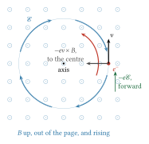
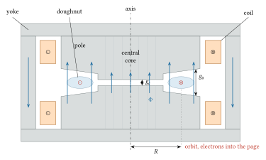
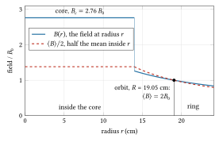
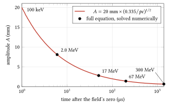
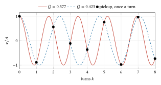
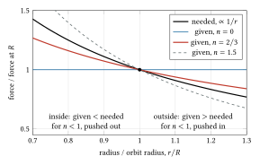
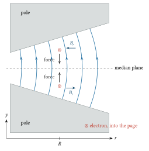
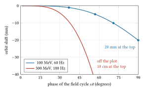

11 The betatron
1922 to the 1950s: Slepian’s patent, Wideroe’s ray transformer, Kerst’s 2.3 MeV tube at Illinois in 1940, the General Electric 100 MeV machine and the Illinois 300 MeV machine; past the wall of the electron that is too light and too fast for a resonant accelerator, by a transformer whose secondary winding is the beam.
Pre-requisites for this chapter.
From Part 0, Foundations:
- F1 Calculus: derivatives and the chain rule (the change from time to distance along the orbit), sine and cosine in radians (a flux that varies as a sine), the exponential and the logarithm (the field index from a shaped gap, growth \(e^{\sigma\theta}\)), integrals (momentum from flux, averages over a cycle), Taylor series (every first-order step about the orbit), partial derivatives (the field’s gradient) and numbers on a computer (the path length and the numerical checks).
- F2 Vectors: the cross product (the magnetic force and the right-hand rule), circular motion, line integrals (the emf round the orbit), flux, curl (the bowed field lines of section 4) and cylindrical coordinates.
- F3 Mechanics: Newton’s laws, momentum, simple harmonic motion (betatron oscillations) and driven oscillation (resonances).
- F4 Electromagnetism: Ohm’s law and resistivity (eddy currents), the magnetic force, Ampère’s law (the magnetic circuit), magnetic flux, Faraday and Lenz (the whole machine) and inductance and iron.
- F5 Waves: complex numbers and Euler’s formula (eigenvalues on the unit circle, sums of kicks), the damped oscillator and its Q, the driven oscillator, LC and RLC circuits (the magnet and its capacitor bank) and Fourier’s idea (the harmonics of a field error).
- F7 Atoms and quanta: the electron-volt and X-rays and bremsstrahlung (what a betatron is for).
From the earlier chapters and this one:
- Energy and momentum, the relations among them and rigidity, in chapter 1: \(\gamma\), \(pc = \sqrt{W(W + 2mc^2)}\), \(v = pc^2/E\), \(dE = v\,dp\) and \(B\rho = p/q\) (sections 2, 3, 5 and 9).
- Relativistic motion in electric and magnetic fields, taught in chapter 1: \(d\boldsymbol{p}/dt = q(\boldsymbol{\mathcal{E}} + \boldsymbol{v}\times\boldsymbol{B})\) at any speed (section 2).
- Weak focusing in the cyclotron, chapter 10, section 6: the field index and the equations of motion about a circular orbit (section 4).
- Faraday induction, inductance and magnetic energy (continued): the induced field round the orbit, which way it pushes the electrons, the voltage per turn of a flux that varies as a sine, and the beam’s own back-emf at injection (sections 1, 2 and 7).
- Magnetic circuits and iron (continued): how coils, iron and air gaps set the central flux against the guide field, how shaped poles and shims set the field index, bias windings, saturation and laminated cores (sections 3, 4 and 8, and the bench).
- Simple and damped harmonic oscillator, taught in chapter 7: the oscillations about the orbit, their frequency, period and wavelength, and the restoring force they need (section 4).
- Ordinary differential equations (continued): the motion rewritten with distance along the orbit, and an oscillator whose mass and frequency change slowly (sections 4 and 6, exercise 9).
- Biot-Savart and Ampere’s law, taught in chapter 2: \(\nabla\times\boldsymbol{B} = 0\) in the gap, and the outward-bowing field lines that focus vertically (section 4).
- Matrices, determinants, eigenvalues (continued), begun in chapter 8: the trace, eigenvalues and the characteristic equation of a \(2\times2\) matrix, for the stability test of a ring (section 4).
- Parametric resonance, Hill and Mathieu equations: Hill’s equation with constant focusing, the tune, and resonances driven by a varying focusing (section 4).
- Driven oscillator, resonance and quality factor (continued): a field error that kicks once a turn, the closed orbit it makes, and the integer resonances (section 4).
- Phase space and Liouville’s theorem, taught in chapter 7: the ellipse an oscillation traces, its area, and emittance, geometric and normalised (section 6).
- Adiabatic invariants (continued): the action as a phase-space area, how accurately it is kept, and why the shrinking is reversible (section 6).
- Lorentz transformations and four-momentum, taught in chapter 1: time dilation and how energy and momentum change between frames, for the radiated power (section 9).
- Larmor formula and relativistic radiated power (continued): the \(\gamma^4\) power on a circle and the energy radiated per turn, \(U_0\) (section 9).
- RLC circuits and phasors (continued): the magnet and its capacitor bank as a resonant circuit, pulsed supplies, and windings in parallel (how betatrons were built and are designed).
In one page
The wall. The cyclotron of chapter 10 works for ions because they stay slow. An electron is relativistic above a few hundred keV: its revolution frequency falls as its mass grows and it slips out of step with a fixed radio frequency. Steady voltages stop at a few megavolts (chapter 6). In the 1930s there was no good way to give electrons tens of MeV.
The idea. Make the electron the secondary winding of a transformer. A changing magnetic flux \(\Phi\) through a circle induces an electric field around it, by Faraday’s law. An electron on that circle gains the induced voltage on every turn, a few volts to a few kilovolts, and goes round hundreds of thousands of times while the flux rises. The same magnet that supplies the flux also bends the electron, and the field can be shaped so that the radius stays fixed as the momentum grows, and so that an electron displaced from the circle oscillates about it rather than being lost.
The equations to remember. For an orbit of radius \(R\) (m) threaded by flux \(\Phi\) (Wb), with \(B_0\) (T) the vertical field at the orbit:
\[ \oint \boldsymbol{\mathcal{E}}\cdot d\boldsymbol{l} = 2\pi R\,\mathcal{E}_\theta = -\frac{d\Phi}{dt}, \qquad \Delta p = \frac{e\,\Delta\Phi}{2\pi R} \]
\[ \Delta\Phi = 2\pi R^2\,\Delta B_0 \quad\Longleftrightarrow\quad \Delta\langle B\rangle = 2\,\Delta B_0 \]
the betatron condition: the mean field inside the orbit must change twice as much as the field at the orbit.
\[ Q_x = \sqrt{1-n}, \qquad Q_y = \sqrt{n}, \qquad 0 < n < 1 \]
the number of transverse oscillations per turn in a field that falls as \(r^{-n}\).
\[ x_{co} = \frac{R\,\delta}{1-n}, \qquad A \propto p^{-1/2} \]
the closed orbit of an electron whose momentum is off by \(\delta = \Delta p/p\), and the shrinking of the oscillation amplitude \(A\) as the momentum \(p\) rises.
Numbers to know. Kerst’s first betatron gave 2.3 MeV in 1940 with a magnet cycled at about 600 Hz (the figure in his patent); in the quarter cycle of rise an electron travels about 110 km, a quarter of a million turns of a small orbit, at about 10 eV a turn. The induced field is tens of volts per metre. Kerst preferred \(n = 2/3\), so \(Q_x = 0.58\) and \(Q_y = 0.82\). Betatrons reached 20 MeV in 1942, 100 MeV at General Electric by 1945 and 300 MeV at Illinois in 1950. An electron on a 1 m orbit radiates 9 eV a turn at 100 MeV and 720 eV a turn at 300 MeV, and the loss grows as the fourth power of the energy. Iron saturation and radiation together end the betatron at a few hundred MeV.
The wall
By 1930 there were three ways to make fast particles in a laboratory, and none suited the electron at high energy. A steady voltage, from a multiplier or a belt (chapter 5, chapter 6), stops at a few megavolts because the insulation breaks down. Resonant acceleration (chapter 9) needs the particle to arrive at each gap in step with an oscillating voltage. In the cyclotron that step is kept because the revolution frequency \(\omega_0 = qB/(\gamma m)\) does not depend on energy while \(\gamma \approx 1\). Here \(\gamma = E/(mc^2) = 1 + W/(mc^2)\) is the Lorentz factor, with \(E\) the total energy and \(W\) the kinetic energy (chapter 1, section 2.1); the revolution frequency is derived in chapter 1, section 4.2 and chapter 10, section 1. An electron’s rest energy \(m_ec^2\) is only 511 keV, so its \(\gamma\) is already 2 at 511 keV of kinetic energy, the frequency halves and the electron falls out of step after a few turns. A drift-tube linear accelerator for electrons needed microwave power that did not exist until radar was developed in the war (chapter 14).
Yet electrons were wanted. Hard X-rays for radiography of thick steel and for treating deep tumours need electron energies of millions of volts (the X-rays are bremsstrahlung, made when fast electrons stop in a heavy target, and none has more energy than the electron had: F7, section 5), and physicists wanted electrons and gamma rays of tens of MeV for nuclear photo-effects, reactions in which a gamma ray absorbed by a nucleus knocks out a neutron or a proton (chapter 8 calls them photonuclear).
The idea of induction acceleration is older than the cyclotron. Joseph Slepian, a research engineer at Westinghouse near Pittsburgh, filed a patent for an “X-ray tube” on 1 April 1922, issued as US 1,645,304 on 11 October 1927. It describes an annular evacuated tube around a magnetic core: a varying flux linking the electron path accelerates the electrons, transverse magnetic fields near the walls guide them, and they spiral outward onto an anode to make X-rays. The patent states the principle but not the relation between the guide field and the flux that would keep the orbit at a fixed radius, and Slepian did not take it beyond the patent.
At the Carnegie Institution’s Department of Terrestrial Magnetism in Washington, Gregory Breit and Merle Tuve worked on an induction accelerator in the late 1920s, independently of Wideroe. They injected the electrons from a gun, and Heilbron and Seidel report a claim of acceleration to 1.5 MeV; accounts differ on how far it worked, and it did not lead to a usable machine.
Rolf Wideroe, a Norwegian student of electrical engineering at Karlsruhe, sketched what he called a ray transformer (Strahlentransformator) in his notebooks from 1923. At Aachen in 1926 he proposed to build one for his doctorate under Walter Rogowski. He derived the condition that the field at the orbit must be half the mean field inside it, the two-to-one rule of this chapter. His tube did not work: by later accounts the electrons made at most about one and a half turns before they were lost. Nothing in his design held a displaced electron near the orbit, and the electrons struck the walls. He turned instead to Ising’s idea of resonant acceleration, built the first drift-tube accelerator, and published both the failed transformer and the working linear accelerator in Archiv für Elektrotechnik in December 1928 (chapter 9).
Ernest Walton, a research student under Rutherford at Cambridge, also worked on induction acceleration. In 1929, in the Proceedings of the Cambridge Philosophical Society, he showed that a field falling as \(1/r\) holds an electron on a circle and gives radial stability if suitable small time-varying electric fields are added. His own summary, in his Nobel lecture of 1951, puts the failures down to one cause: the early attempts gave very little thought to the stability of the orbit. In 1932 Lawrence and Livingston showed in the cyclotron that a field decreasing with radius gives vertical stability, through the curvature of the field lines. The two halves of the answer, radial and vertical focusing, were now known separately.
Max Steenbeck, at the research laboratory of Siemens-Schuckertwerke in Berlin, filed a German patent on 7 March 1935 (DE 698 867, published 6 December 1940). It contains the two-to-one condition, a guide field that falls outward no faster than \(1/r\) (a field index below 1), preferably about half as fast, and a pole constriction that saturates at the top of the cycle to let the orbit expand and release the electrons. Steenbeck later reported that a tube built in 1935 had worked, at about 1.8 MeV; his account appeared only in 1943, and the claim is disputed. The patent shows that by 1935 the conditions were understood; what was missing was a machine built and analysed carefully enough to work.
The physics
Pre-requisite (continued): Faraday induction, inductance and magnetic energy
Pre-requisite (continued). Chapter 1 taught Faraday’s law in integral form, magnetic flux, inductance and the energy stored in a coil. This section adds three things the betatron needs: what the minus sign in the law (Lenz’s law) says about which way the electrons go, the voltage per turn when the flux varies as a sine, and the beam itself as a one-turn winding whose own rising current induces a back-emf. Section 1 uses the first two at once; section 7 uses the third for the self-contraction of the orbit at injection. Taught from Tong, Electromagnetism, sections 4.1 (Faraday’s law and Lenz’s law) and 4.1.2 (inductance and magnetostatic energy), Landau and Lifshitz, volume 2, section 26, and Livingston and Blewett, section 7-4 (the 20 MeV magnet and its circuit).
The law, in one line. Around any closed path \(C\), the electric field \(\boldsymbol{\mathcal{E}}\) (V/m) induced by a changing magnetic flux \(\Phi\) (Wb) through a surface bounded by \(C\) satisfies \(\oint_C \boldsymbol{\mathcal{E}}\cdot d\boldsymbol{l} = -d\Phi/dt\). Nothing in the law asks for a wire: the field is there in empty space, and an electron on the path feels it. (The circle on the integral sign means the path closes on itself; \(\boldsymbol{\mathcal{E}}\cdot d\boldsymbol{l}\) adds up the part of the field along each small step \(d\boldsymbol{l}\) of the path, the line integral of F2, section 7; \(\Phi\) is the flux of F2, section 9; and the law itself is F4, section 14. The integral is the work done on a unit charge carried once round, the electromotive force or emf, in volts.)
The sign: Lenz’s law. The integral around \(C\) needs a direction, and the flux needs a positive side; the right-hand rule ties them together (curl the fingers of the right hand along the direction of travel round \(C\), and the thumb points to the positive side; F2, section 3). Take the \(y\) axis vertical and upward, and go round \(C\) anticlockwise as seen from above; then flux counts as positive when it points up. Suppose the upward flux rises, so \(d\Phi/dt > 0\). The law gives a negative circulation: the induced field points clockwise, seen from above. A positive charge would be pushed clockwise, and a clockwise current makes a downward field inside the loop, against the rise. That is Lenz’s law: an induced current opposes the change that drives it. Tong (section 4.1) calls it a kind of inertia of the field, and it must be so, or a small change would feed itself without limit.
An electron has negative charge, so the same field pushes it the other way: anticlockwise seen from above. Now ask which way the same upward field bends an electron round a circle. A charge circling in a magnetic field always goes round in the sense whose current makes a field inside the circle opposite to the applied one (a circling charge is diamagnetic). For an electron in an upward field, that sense is anticlockwise seen from above; check it with the force \(-e\boldsymbol{v}\times\boldsymbol{B}\) of F4, section 10, as Figure 11.1 does for the electron on the right of the circle. So the rising field pushes the electron forward in exactly the direction in which it bends it round. This is not luck. Both statements say that a ring of charge in a rising field moves so as to oppose the rise.

Figure 11.1. The orbit seen from above, with the field \(\boldsymbol{B}\) pointing up (out of the page) and rising. The induced field \(\boldsymbol{\mathcal{E}}\) circulates clockwise (Lenz’s law). An electron, of charge \(-e\), is pushed the other way, anticlockwise, by \(-e\boldsymbol{\mathcal{E}}\); going anticlockwise at the right of the circle, with velocity \(\boldsymbol{v}\) up the page, it feels the magnetic force \(-e\boldsymbol{v}\times\boldsymbol{B}\) towards the centre. The same rising field pushes it forward and bends it round.
It also says which part of the cycle accelerates. Let the flux and the guide field rise and fall together as \(\sin\omega t\). In the first quarter both are upward and growing: electrons going anticlockwise gain energy and are bent correctly. In the second quarter the field is still upward but falling, so the induced field reverses and the same electrons are slowed. A betatron uses the rising quarter and fires its gun at its start.
A flux that varies as a sine. Let \(\Phi(t) = \Phi_{max}\sin\omega t\), with \(\omega = 2\pi f\) the angular frequency of the magnet’s excitation (rad/s) and \(f\) its frequency (Hz). The voltage per turn is the magnitude of the emf,
\[ V_{turn}(t) = \left|\frac{d\Phi}{dt}\right| = \omega\,\Phi_{max}\cos\omega t . \]
It is largest, \(\omega\Phi_{max}\), at \(t = 0\), where the flux and the field are zero, which is when the electrons are injected; it falls to zero at the top of the cycle. Averaged over the rising quarter, of length \(1/(4f)\), it is
\[ \overline{V}_{turn} = \frac{\Phi_{max}}{1/(4f)} = 4f\,\Phi_{max} = \frac{2}{\pi}\,\omega\Phi_{max} . \]
At work. Kerst’s first betatron needed a flux swing of 4.34 mWb at 600 Hz (section 2). The peak voltage per turn is \(2\pi \times 600 \times 4.34 \times 10^{-3} = 16.4\) V and the mean over the rise is \(4 \times 600 \times 4.34 \times 10^{-3} = 10.4\) V. Section 2 finds a mean gain of 9.8 eV per turn, a little less than 10.4 eV. The difference is real: early in the rise, when the voltage per turn is largest, the electron is still slow and makes fewer turns per second, so the average per turn weights the later, weaker turns more. For Humphries’ 300 MeV example on a 1 m orbit at 180 Hz, \(\Phi_{max} = 6.30\) Wb, so the peak is 7.12 kV per turn and the mean 4.53 kV per turn.
Self-induction: the beam as a winding. A current \(I\) (A) round a circuit makes a flux through that same circuit, \(\Phi_{self} = LI\), with \(L\) the self-inductance (H). If \(I\) changes, the changing self-flux induces an emf \(-L\,dI/dt\) round the circuit, which by Lenz’s law opposes the change: a back-emf.
The circulating beam is a current round the core: a winding of one turn. When the gun fires, the circulating current \(I_b\) rises from zero in a few microseconds. The flux it makes through its own orbit is carried by the same iron as the main flux, \(\Phi_{self} = L_1 I_b\), where \(L_1\) is the inductance of one turn round the magnet. While \(I_b\) rises, the beam induces round its own orbit an emf \(-L_1\,dI_b/dt\). By Lenz’s law it opposes the rise of the beam current, which means it pushes backwards on the very electrons that carry it: every electron in the ring is slowed. The momentum each electron loses follows from section 2’s rule, rate of change of momentum equals \(e\) times the induced field:
\[ \frac{dp}{dt} = -\frac{e}{2\pi R}\,L_1\frac{dI_b}{dt} \quad\Longrightarrow\quad \Delta p = -\frac{e\,L_1 I_b}{2\pi R}, \]
with \(p\) in kg m/s and \(R\) the orbit radius (m). Like the accelerating gain, the loss depends only on how much the current changes, not on how fast. A momentum deficit moves the orbit inward (section 5 of this chapter: \(x_{co} = R\,\delta/(1-n)\) with \(\delta = \Delta p/p\) the fractional momentum error, and \(n\) the field index of section 4, a number between 0 and 1 that says how fast the guide field falls with radius).
At work. What is \(L_1\)? Livingston and Blewett (section 7-4) give the 20 MeV betatron’s winding as 81 turns on each pole, 162 in series, resonated at 180 Hz by a 5.5 µF capacitor bank. Resonance means \(\omega^2 LC = 1\) (F5, section 6), so \(L = 1/(\omega^2 C) = 0.142\) H. Inductance grows as the square of the number of turns, because each turn both makes and links the flux, so one turn round the same iron has \(L/N^2 = 0.142/162^2 = 5.4\) µH. The orbit, at 19.05 cm, links only the flux inside it: 0.082 Wb out of about 0.105 Wb through the whole pole (taking the field in the ring between the orbit and the pole edge at 9.5 inches as about \(0.95B_0\), with \(B_0 = 0.36\) T). So \(L_1 \approx 0.78 \times 5.4 = 4.2\) µH, a rough estimate. For a circulating current of 1 A,
\[ \Delta(pc) = \frac{e\,c\,L_1 I_b}{2\pi R} = \frac{(3.00\times10^{8})(4.2\times10^{-6})(1)}{2\pi(0.1905)}\ \text{eV} = 1.05\ \text{keV}. \]
At an injection energy of 50 keV (\(pc = 232\) keV), that is \(\delta = -0.45\) per cent, and with \(n = 0.75\) (the 20 MeV magnet’s index) the orbit shrinks by \(0.1905 \times 0.0045/0.25 = 3.5\) mm. Compare the single-electron drift of section 7: with the peak gain of 92.7 V per turn at injection (found in the RLC section below) and \(\beta = v/c = 0.41\) at 50 keV, and since a small energy gain \(dE\) raises the momentum by \(dp = dE/v\) (chapter 1, section 2.2), the momentum rises by \(\Delta(pc) = 92.7/0.41 = 225\) eV a turn, which moves an orbit 3 cm off the equilibrium by only \(0.03 \times 225/231\,500 = 29\) µm a turn (section 7: with the momentum difference fixed, the shift falls in proportion as \(p\) grows; \(pc = 231.5\) keV at 50 keV). A millimetre-scale contraction from the beam’s own current is large beside that, which is why Kerst looked to it to explain capture.
Exercises.
A1. With the flux and guide field varying as \(\sin\omega t\), in which quarters of the cycle can a betatron accelerate electrons, and which way do they go round in each?
Answer
In the first quarter the field points up and grows: electrons going anticlockwise (seen from above) are both bent round and pushed forward. In the second quarter the field is up but falling, so the induced field reverses and those electrons are slowed. In the third quarter the field points down and grows in magnitude: now electrons going clockwise are bent round and pushed forward, since flipping the field flips both the bending sense and the induced field. The fourth quarter slows them. So an unbiased magnet could accelerate in the first and third quarters, in opposite senses. Each needs electrons injected at the start of that quarter.
A2. Kerst’s betatron ran at 600 Hz with a flux swing of 4.34 mWb, and electrons gained 2.3 MeV in about 234 000 turns. Find the peak and mean voltage per turn, and explain why the mean energy gain per turn is smaller than the mean voltage.
Answer
Peak: \(\omega\Phi_{max} = 2\pi \times 600 \times 4.34\times10^{-3} = 16.4\) V. Mean over the quarter cycle: \(4f\Phi_{max} = 10.4\) V. Mean gain per turn: \(2.3\ \text{MeV}/234\,000 = 9.8\) eV. The time-average weights each moment equally, but the turn-average weights each moment by the number of turns made in it. Early in the cycle, when the voltage per turn is highest, the electron is slower and makes fewer turns, so the turn-average is pulled toward the later, smaller voltages.
A3. In the 20 MeV magnet (\(L_1 \approx 4.2\) µH, \(R = 19.05\) cm, \(n = 0.75\)), electrons are injected at 30 keV and the circulating current rises to 0.5 A. How far does the orbit contract from the beam’s back-emf alone?
Answer
\(\Delta(pc) = c L_1 I_b/(2\pi R) = 3.00\times10^8 \times 4.2\times10^{-6} \times 0.5/(2\pi \times 0.1905) = 526\) eV. At 30 keV, \(pc = \sqrt{0.03 \times (0.03 + 1.022)} = 0.178\) MeV, so \(\delta = -0.0030\). The contraction is \(R\delta/(1-n) = 0.1905 \times 0.0030/0.25 = 2.3\) mm. The lower the injection momentum, the larger the fractional loss for the same current.
1. Faraday’s law around an orbit
The physical picture is a transformer. A coil drives a magnetic flux through an iron core. Any closed loop around the core has an electromotive force equal to the rate of change of the flux through it. A wire loop would carry a current. In the betatron the loop is a circle in vacuum and the “current” is electrons that go round it.

Figure 11.2. A small betatron magnet cut through its axis (not to scale). The coils drive flux \(\Phi\) up through the laminated central core, across its short gap \(g_c\), and up through the longer orbit gap \(g_0\); it returns down through the yoke. The doughnut, the evacuated ring in which the electrons travel, sits in the orbit gap at radius \(R\). At the moment drawn the flux is up and rising, so the electrons go anticlockwise seen from above: into the page on the right. The pole faces open outward, which makes the field fall with radius (section 4).
Take cylindrical coordinates \((r, \theta, y)\) (F2, section 13) with \(y\) vertical, along the axis of symmetry of the magnet, and the orbit a circle of radius \(R\) in the plane \(y = 0\). In a betatron the orbit is a circle, so the bending radius \(\rho\) equals the mean radius \(R\). In this chapter the electric field is written \(\boldsymbol{\mathcal{E}}\) (V/m), because \(E\) is the particle’s total energy. Faraday’s law in integral form (Landau and Lifshitz, volume 2, section 26) is
\[ \oint_{C} \boldsymbol{\mathcal{E}}\cdot d\boldsymbol{l} = -\frac{d\Phi}{dt}, \qquad \Phi = \int_S B_y\,dS \]
where \(C\) is the circle, \(S\) the flat disc it bounds, and \(\Phi\) the magnetic flux through the disc in webers (T m\(^2\)). By the axial symmetry of the magnet, the induced field on the circle is purely azimuthal and the same at every \(\theta\), so the integral is \(2\pi R\,\mathcal{E}_\theta\):
\[ \mathcal{E}_\theta = -\frac{1}{2\pi R}\frac{d\Phi}{dt} \]
The voltage gained per turn by a particle of charge \(q\) is the magnitude of the emf, \(V_{turn} = |d\Phi/dt|\) in volts. The sign fixes the direction: electrons go round in the sense in which the induced field pushes them forward. From now on take magnitudes and write \(e\) for the electron’s charge.
Define the mean field inside the orbit, \(\langle B \rangle = \Phi/(\pi R^2)\). Then \(d\Phi/dt = \pi R^2\,d\langle B\rangle/dt\), and the magnitude of the field is \(\pi R^2/(2\pi R) = R/2\) times the rate of change of the mean field:
\[ \mathcal{E}_\theta = \frac{R}{2}\,\frac{d\langle B\rangle}{dt} \]
2. The momentum gain
The relativistic equation of motion of a charge is \(d\boldsymbol{p}/dt = q(\boldsymbol{\mathcal{E}} + \boldsymbol{v}\times\boldsymbol{B})\) (Landau and Lifshitz, volume 2, section 17; taught in chapter 1); it holds for any speed with \(\boldsymbol{p} = \gamma m \boldsymbol{v}\). On a circular orbit the velocity is azimuthal and the vertical magnetic field gives only a radial force, so the azimuthal component is
\[ \frac{dp_\theta}{dt} = e\,\mathcal{E}_\theta = \frac{e}{2\pi R}\,\frac{d\Phi}{dt} \]
If the radius \(R\) stays fixed, the factor \(e/(2\pi R)\) is a constant, and integrating both sides over time (F1, section 7) gives at once:
\[ p(t) - p(0) = \frac{e}{2\pi R}\,\big[\Phi(t) - \Phi(0)\big] \]
with \(p\) in kg m/s. Three things follow. The momentum gained depends only on the change of flux, not on how fast it changes. It does not depend on the particle’s speed, so it holds from rest to ultrarelativistic energies. And the energy gained per turn, \(e\,d\Phi/dt\), is small, so a large energy needs many turns: the electron must stay on the orbit for a long time.
Kerst’s first betatron. It reached a kinetic energy \(W = 2.3\) MeV (Kerst, 1941). His patent, filed in November 1940, gives about 600 Hz for the magnet’s excitation. Take an orbit radius of 7.5 cm, the size usually quoted for his first tube (not checked here against his 1941 paper, so treat it as approximate; the turns and distance Livingston and Blewett give below imply about 8 cm). The momentum at 2.3 MeV is \(pc = \sqrt{W(W + 2m_ec^2)} = 2.76\) MeV (from \(E^2 = (pc)^2 + (m_ec^2)^2\) with \(E = W + m_ec^2\), chapter 1, section 2.2), so the magnetic rigidity (chapter 1, section 4.1) is \(B\rho = p/e = 9.22\) mT m; in numbers, \(B\rho\) in T m is \(pc\) in eV divided by \(c\) in m/s, \(2.76\times10^6/3.00\times10^8\). The flux must change by \(\Delta\Phi = 2\pi R\,p/e = 4.34\) mWb. If the field rises as a sine from zero to its peak in a quarter cycle, \(1/(4f) = 0.417\) ms, the peak emf is \(\omega\Phi_{max} = 16.4\) V a turn, with \(\omega = 2\pi f\) the magnet’s angular frequency and \(\Phi_{max} = \Delta\Phi\), and the peak induced field \(16.4/(2\pi \times 0.075) = 35\) V/m. How far does the electron go? Its momentum rises as \(pc = 2.76\ \text{MeV}\times\sin\omega t\), and its speed follows from the momentum, \(v = pc^2/E\) (chapter 1, section 2.2), so \(v/c = pc/\sqrt{(pc)^2 + (m_ec^2)^2}\). The path is \(s = \int_0^{1/(4f)} v\,dt\). It has no neat formula, but summing \(v\,\Delta t\) over many small steps of time (F1, section 11) gives 110 km, about 234 000 turns of the 7.5 cm orbit, at a mean gain of \(2.3\ \text{MeV}/234\,000 = 9.8\) eV a turn. Livingston and Blewett (section 7-3) quote the estimate made for the first Illinois betatron: about 200 000 turns and 100 km in a quarter cycle. Their text calls the field “60-cycle”, but at nearly the speed of light a quarter cycle at 60 Hz would be over 1000 km, so their own figures fit about 600 Hz. A field of tens of volts per metre, applied for a hundred kilometres, gives megavolts.
Pre-requisite (continued): Magnetic circuits and iron
Pre-requisite (continued). Chapter 8 introduced the field \(H\), the relative permeability of iron, the magnetic circuit of a closed core, saturation and magnetic domains. This section recalls the first three and adds what a magnet with an air gap needs: how a coil, an iron path and an air gap share the flux, why the gap sets the field, how two gaps of different length make the central field stronger than the field at the orbit, how a shaped gap sets the field index, how a bias winding doubles the usable swing of flux, and why the iron is laminated. Section 3 uses them to build the two-to-one rule out of iron; section 4, section 8 and the bench use the gap shaping, the shims and saturation. Taught from Tong, Electromagnetism, sections 8.2 (magnetic fields in matter) and 8.6.2 (waves in conductors, the skin depth), Livingston and Blewett, sections 7-4 (magnet design), 7-5 (biased betatrons and flux forcing), 7-6 (pulse powering) and 8-2 (the magnetic circuit), and the Handbook, section 6.3 (properties of ferromagnetic materials, Tigner).
Two fields in iron. Inside iron the atomic dipoles line up and add their own field to that of the coil. Tong (section 8.2) separates the two by defining the magnetising field \(\boldsymbol{H}\) (A/m), whose sources are only the currents we put in the windings. In iron that is not saturated, \(\boldsymbol{B} = \mu_0\mu_r\boldsymbol{H}\), with \(\mu_0 = 4\pi\times10^{-7}\) H/m and the relative permeability \(\mu_r\) in the thousands for transformer steel. Ampère’s law (F4, section 12), written for \(\boldsymbol{H}\), counts only the winding current: round any closed loop that threads a coil of \(N\) turns carrying current \(I\),
\[ \oint \boldsymbol{H}\cdot d\boldsymbol{l} = NI , \]
the ampere-turns. And field lines do not end (\(\nabla\cdot\boldsymbol{B} = 0\), F4, section 13), so the flux \(\Phi = BA\) through each cross-section of a closed iron path is the same all the way round.
The magnetic circuit. Take an iron path of length \(l\) and a gap of length \(g\), both of cross-section \(A\), with one coil of \(N\) turns. The flux, and so \(B\), is the same in the iron and the gap; \(H\) is not, because \(\mu_r\) differs. Ampère’s law round the loop gives
\[ \frac{B}{\mu_0\mu_r}\,l + \frac{B}{\mu_0}\,g = NI \quad\Longrightarrow\quad B = \frac{\mu_0 NI}{g + l/\mu_r} . \]
Read it as a circuit (Livingston and Blewett, section 8-2): the ampere-turns are a “magnetomotive force”, each part has a “reluctance” \(l/(\mu_0\mu_r A)\) (with \(\mu_r = 1\) for the gap), and flux is the magnetomotive force divided by the total reluctance, as current is voltage over resistance. The iron’s share is \(l/\mu_r\): for a 2 m path with \(\mu_r = 2000\) it is 1 mm, against a gap of several centimetres. So, while the iron is far from saturation,
\[ B \approx \frac{\mu_0 NI}{g}: \]
the gap sets the field, and the iron only carries the flux to it. Two numbers show the difference. A field of 1 T across a 10 cm gap needs \(NI = Bg/\mu_0 = 79\,600\) ampere-turns. A closed iron path of 5 m with no gap, worked at 1.5 T with \(\mu_r = 1000\), needs \(Bl/(\mu_0\mu_r) = 6\,000\). The stored energy differs in the same way: \(B^2/(2\mu_0) = 398\) kJ/m\(^3\) in a 1 T gap, and \(B^2/(2\mu_0\mu_r) = 0.4\) kJ/m\(^3\) in the iron.
Two gaps on one coil. A small betatron has one magnet: a pair of poles with a central core inside the ring where the orbit lies. The flux crosses from pole to pole either through the central gap \(g_c\) or through the orbit gap \(g_0\), and returns through a common yoke. Both crossings are driven by the same ampere-turns, so
\[ B_c \approx \frac{\mu_0 NI}{g_c}, \qquad B_0 \approx \frac{\mu_0 NI}{g_0}, \qquad \frac{B_c}{B_0} = \frac{g_0}{g_c} . \]
The ratio depends only on the gaps, not on the current. As the current swings through its cycle the two fields keep their ratio, and the two-to-one rule, once satisfied at the top, is satisfied at every instant.
At work. Livingston and Blewett (section 7-4) work this out for the 20 MeV betatron. The orbit radius is \(R = 7.5\) in (19.05 cm), the field at the orbit \(B_0 = 0.36\) T at 20 MeV, and the central core has a radius \(a = 5.5\) in. Assume the core field \(B_c\) uniform inside \(a\), and the field in the ring between \(a\) and \(R\) averaging \(1.11B_0\). (That machine’s guide field falls as \(r^{-n}\) with field index \(n = 0.75\), as the paragraph on shaping the gap below explains; at 6.5 in, the middle of the ring, it is \((7.5/6.5)^{0.75} = 1.11\) times \(B_0\).) The rule asks for a total flux \(2\pi R^2 B_0\):
\[ \pi a^2 B_c + \pi(R^2 - a^2)(1.11\,B_0) = 2\pi R^2 B_0 \quad\Longrightarrow\quad \frac{B_c}{B_0} = \frac{2R^2 - 1.11(R^2 - a^2)}{a^2} = 2.76 , \]
so \(B_c = 0.99\) T. The central gap must be about 2.8 times shorter than the gap at the orbit. In that machine it was made so by two discs of laminated iron set into the central gap; their thickness fixed the residual gap, and so the radius at which the rule holds. Model measurements set it to put the equilibrium orbit at 19 cm.

Figure 11.3. The 20 MeV betatron’s field in the median plane, in units of \(B_0\): a uniform \(B_c\) in the core out to \(a\) = 13.97 cm, then the guide field \(B_0(R/r)^{0.75}\) out to the pole edge at 24.1 cm. The dashed curve is half the mean field inside each radius, \(\Phi(r)/(2\pi r^2)\). The two-to-one rule holds where the curves cross, and that radius is the equilibrium orbit. Integrating the guide field exactly over the ring, rather than taking it as \(1.11B_0\), gives \(B_c = 2.763B_0\), the value drawn, which puts the crossing at \(R\) = 19.05 cm; the text’s rounded 2.76 puts it 0.6 mm inside. A smaller \(B_c\) (a wider central gap) moves the crossing inward.
Saturation. The approximation \(B \approx \mu_0NI/g\) holds while \(l/\mu_r\) is small beside \(g\). Near saturation \(\mu_r\) falls, the iron’s reluctance grows, and \(B\) stops following \(I\). The central core, worked hardest, saturates first: its flux lags while the orbit field still follows the current, the ratio drifts, and the orbit moves. Section 8 turns this into a tool to move the beam onto a target. It also sets the limit of section 3: the flux a core of area \(A\) can carry is at most \(B_sA\).
Shaping the gap sets the field index. Where the gap \(g(r)\) changes slowly over distances comparable to itself, the field at each radius is about \(\mu_0NI/g(r)\). Then \(\ln B = \text{const} - \ln g\). Differentiate both sides with respect to \(r\), using \(d(\ln u)/dr = (du/dr)/u\) (F1, section 4): \((1/B)\,dB/dr = -(1/g)\,dg/dr\). Multiply by \(-r\):
\[ n = -\frac{r}{B}\frac{dB}{dr} = \frac{r}{g}\frac{dg}{dr} . \]
A field falling as \(r^{-n}\) needs a gap opening as \(r^{n}\): the pole faces flare apart outward. For the 20 MeV magnet, \(n = 0.75\) at 7.5 in means the field falls by \(n/R = 0.75/7.5 = 10\) per cent per inch near the orbit; Livingston and Blewett quote \(1.11B_0\) at 6.5 in and \(0.91B_0\) at 8.5 in, and the gap must open by \((8.5/6.5)^{0.75} = 1.22\) across those two inches. The rule fails near the edges of the poles, where field lines bulge out of the gap, so the region of constant \(n\) is shorter than the pole. Thin strips of iron, shims, added to the pole face close the gap locally and raise the field there; placed near the edges, they extend the region of uniform \(n\). The exact shape needs the solution of Laplace’s equation for the field in the gap (chapter 2), which was found by measurement on models and is now computed.
Bias windings. Section 3’s rule concerns changes of flux, not values. A core that swings from 0 to \(+B_s\) uses half of what the iron allows; one that swings from \(-B_s\) to \(+B_s\) uses all of it. A separate winding on the core carrying direct current sets the starting flux: the alternating excitation then carries it from about \(-B_s\), through zero, to \(+B_s\) while the orbit field rises from zero to its peak. Livingston and Blewett (section 7-5) describe both flux biasing (the steady current on the core) and field biasing (on the guide field). The Illinois 300 MeV betatron swung its core from \(-1.4\) T to \(+1.6\) T, a swing of 3.0 T (their table 7-1). With an orbit field of 0.92 T at 1.22 m, the rule asks for \(\Delta\Phi = 2\pi R^2 \Delta B_0 = 8.60\) Wb; if the core carried it all, its area would be \(8.60/3.0 = 2.87\) m\(^2\), a circle of 0.96 m radius. Its bias winding needed only 2 600 ampere-turns: that core had no air gap, and a closed iron path needs few ampere-turns, as the numbers above show. Removing the central gap also removes most of the stored energy, and Livingston and Blewett note that it cut the size and cost of the capacitor bank to about a third.
Why the iron is laminated. A changing flux inside solid iron induces an emf round every loop drawn in the iron, and iron conducts, so currents flow inside it: eddy currents. They heat the iron, and by Lenz’s law their field opposes the change, keeping the flux out of the interior. A field oscillating at angular frequency \(\omega\) gets into a conductor of resistivity \(\rho\) (Ω m) only to about a skin depth (Tong, section 8.6.2, derives it for a non-magnetic conductor, \(\mu_r = 1\); in iron the permeability multiplies \(\mu_0\)),
\[ \delta = \sqrt{\frac{2\rho}{\omega\mu_0\mu_r}} . \]
For silicon steel, \(\rho \approx 0.47\) µΩ m; at 180 Hz with \(\mu_r = 1000\), \(\delta = 0.81\) mm, and with \(\mu_r = 3000\), 0.47 mm. A solid iron pole would carry the changing flux only in a skin under a millimetre deep. So the iron is built from thin insulated sheets, laminations, thinner than \(\delta\), lying along the flux. Each sheet cuts the large eddy loops into thin ones.
The loss in one lamination can be worked out. Take a sheet of thickness \(d\), with \(z\) measured from its mid-plane, and a field \(B = B_m\sin\omega t\) along the sheet, uniform through it because \(d \ll \delta\). Draw a long thin rectangle in the sheet’s cross-section, of length \(w\) along the sheet and reaching from \(-z\) to \(+z\). The flux through it is \(2zwB\), so the emf round it is \(2zw\,dB/dt\). The field along the two long sides, where all the emf is, is then \(\mathcal{E}(z) = z\,dB/dt\), pointing opposite ways on the two sides. The power per unit volume of a field \(\mathcal{E}\) in a material of resistivity \(\rho\) is \(\mathcal{E}^2/\rho\) (Ohm’s law gives the current density \(J = \mathcal{E}/\rho\), and the power per unit volume is \(J\mathcal{E}\): F4, section 8). Average it over the thickness, where the mean of \(z^2\) is \(\frac{1}{d}\int_{-d/2}^{d/2}z^2\,dz = d^2/12\), and over time, where \(dB/dt = \omega B_m\cos\omega t\) and the mean of \(\cos^2\) is \(\tfrac12\), so the mean of \((dB/dt)^2\) is \(\omega^2B_m^2/2\):
\[ P = \frac{1}{\rho}\cdot\frac{d^2}{12}\cdot\frac{\omega^2B_m^2}{2} = \frac{\pi^2 f^2 B_m^2 d^2}{6\rho}\quad (\text{W/m}^3). \]
The loss grows as the square of the thickness and the square of the frequency. The Handbook (section 6.3) writes the total loss of laminated steel as a hysteresis term (the energy lost each cycle in turning the iron’s domains back and forth, F4, section 15, a fixed amount per cycle) that grows as \(f\) plus this eddy term, which grows as \(f^2d^2\).
At work. The 20 MeV magnet used 0.014 in (0.356 mm) silicon steel laminations at 180 Hz. At 1 T the eddy loss is \(\pi^2 \times 180^2 \times 1 \times (3.56\times10^{-4})^2/(6 \times 4.7\times10^{-7}) = 14\) kW/m\(^3\), 1.9 W/kg. If all its iron, about 3.5 tons in Livingston and Blewett’s American units (3.2 tonnes, 0.42 m\(^3\)), ran at 1 T, that would be 6.0 kW; Livingston and Blewett give 26 kW for all the losses in the windings, capacitors and iron, of which the eddy loss is a fair part. The same sheets at Kerst’s 600 Hz would lose 11 times more per cubic metre. Since heating grows with the volume of iron, as \(R^3\), and the surface that cools it only as \(R^2\), large betatrons ran hot: the Illinois 300 MeV machine was limited by the heating of its iron to about a twentieth of the time, and was pulsed (Livingston and Blewett, section 7-6).
Exercises.
B1. A betatron magnet has 162 turns and an orbit gap of 8 cm. What peak current gives 0.36 T at the orbit, and what central gap gives a central field 2.76 times larger, if the iron’s reluctance is neglected?
Answer
\(NI = B_0 g_0/\mu_0 = 0.36 \times 0.08/(4\pi\times10^{-7}) = 22\,900\) ampere-turns, so \(I = 22\,900/162 = 141\) A. The central gap is \(g_c = g_0/2.76 = 2.9\) cm. (The RLC circuits section below finds a peak current of 148 A for the real 20 MeV magnet, so a gap of about this size is consistent with it.)
B2. For an index \(n = 0.75\) around an orbit at 7.5 in, by what factor must the gap at 8.5 in exceed the gap at 6.5 in? What happens to \(n\) if a shim 1 mm thick is laid on the pole face only at the outer radius?
Answer
\(g \propto r^n\), so \(g(8.5)/g(6.5) = (8.5/6.5)^{0.75} = 1.22\). A shim at the outer radius closes the gap there and raises the field locally, so the field falls less steeply outward: \(n\) decreases near the shim. Shims are the fine adjustment of \(n\) after the poles are cut.
B3. The 20 MeV magnet’s laminations are 0.356 mm thick at 180 Hz. If a smaller machine ran at 600 Hz, what thickness would give the same eddy loss per cubic metre at the same peak field? Is the skin depth still larger than the sheet?
Answer
\(P \propto f^2d^2\), so \(d\) must fall as \(1/f\): \(0.356 \times 180/600 = 0.107\) mm. The skin depth falls as \(f^{-1/2}\): from 0.81 mm at 180 Hz to \(0.81\sqrt{180/600} = 0.45\) mm at 600 Hz (for \(\mu_r = 1000\)), still four times the sheet, so the flux fills it.
3. Keeping the radius: the two-to-one rule
The same magnet bends the electron. For a circle of radius \(R\) the vertical field \(B_0 = B_y(R)\) at the orbit must satisfy
\[ p = e B_0 R \]
(the rigidity relation \(B\rho = p/q\) of chapter 1, section 4.1, with \(\rho = R\)). If \(R\) is to be constant while \(p\) rises, then \(dp/dt = eR\,dB_0/dt\). Equate this with the induction result of section 2:
\[ eR\,\frac{dB_0}{dt} = \frac{e}{2\pi R}\,\frac{d\Phi}{dt} \quad\Longrightarrow\quad \frac{d\Phi}{dt} = 2\pi R^2\,\frac{dB_0}{dt} \]
Integrated from the start of the cycle,
\[ \Delta\Phi = 2\pi R^2\,\Delta B_0 \qquad\text{or}\qquad \Delta\langle B\rangle = 2\,\Delta B_0 \]
This is Wideroe’s condition, the betatron condition. The change of the mean field inside the orbit must be twice the change of the field at the orbit. A uniform field fails: it puts \(\langle B \rangle = B_0\), so the electron gains only half the momentum the field demands, and the field bends it on a circle of half the radius (exercise 3). It cannot stay on the orbit; it spirals in toward the centre. This is the point Walton made in his lecture: a uniform field is always twice as strong as needed.
So the magnet must put more flux through the centre than at the orbit. The usual way is a central core with a small air gap, or none, inside a wider gap at the orbit, so that the field in the middle is higher than the field the electrons see. The poles are shaped so that the rule holds at one radius, the equilibrium orbit, and so that near it the field falls outward (section 4).
The rule involves changes, not values. If the core starts the cycle at \(-B_s\) (a reverse bias of the central flux) and ends at \(+B_s\), the swing doubles, and so does the momentum. Humphries (section 11.7) describes the two ways: a steady bias winding on the core (flux biasing), or a steady component added to the guide field (field biasing).
The iron limit. Suppose the central core is iron that saturates at \(B_s\) and fills the circle, so \(\Delta\Phi \le \pi R^2 \times 2B_s\) with full biasing. Then
\[ p_{max} = \frac{e\,\Delta\Phi}{2\pi R} = e B_s R, \qquad pc_{max} = e\,c\,B_s R \]
Without bias the swing is \(0\) to \(B_s\) and the limit is half this. For \(R = 1\) m and \(B_s = 1.5\) T, the example in Humphries’ section 11.1, \(pc_{max} = 450\) MeV with bias and 225 MeV without. The energy grows only linearly with \(R\), while the volume of iron, and so its weight and cost, grows as \(R^3\).
Pre-requisite (continued): Ordinary differential equations (linear, constant and varying coefficients)
Pre-requisite (continued). Chapter 2 solved \(x'' + Kx = 0\) with constant \(K\), and changed the independent variable from time to distance along the path; later chapters added damping, a constant force and linearisation. This section adds one method: solving an oscillator whose coefficients change slowly, by letting its amplitude and phase drift and keeping only the terms of first order in the slowness. Section 4 uses the change of variable to path length \(s = R\theta\); section 6 and exercise 9 use the slow-coefficient method to show that betatron oscillations shrink as \(p^{-1/2}\). Taught from Landau and Lifshitz, volume 1, sections 27 (an oscillator whose parameters depend on time, \(d(m\dot{x})/dt + kx = 0\)) and 49 (adiabatic invariants), and Lee, Accelerator Physics, chapter 2, section II.5.E (adiabatic damping).
From time to path length, for a ring. For a particle going round at speed \(v\), the distance along the orbit is \(s = vt = R\theta\), so \(d/dt = v\,d/ds\) by the chain rule (F1, section 2), and applying it twice with \(v\) constant, \(\ddot{x} = v^2x''\), where a dot is \(d/dt\) and a prime \(d/ds\). An equation \(\ddot{x} + \omega_x^2x = 0\) becomes \(x'' + (\omega_x/v)^2x = 0\); with \(\omega_x = \sqrt{1-n}\,v/R\) that is section 4’s \(x'' + (1-n)x/R^2 = 0\). This needs \(v\) to change little over the stretch considered. In a betatron it changes by a few per cent in a turn just after injection (at 100 keV and 7 keV a turn in the 300 MeV example below, by 2.7 per cent) and far less later; the method below takes the change into account. The slope \(x'\) is the angle in radians between the path and the reference orbit.
The problem. In a betatron the momentum grows while the electron oscillates, so Newton’s law for the vertical motion is written with the momentum \(p_y = M\dot{y}\), where \(M = \gamma m\) (kg) changes in time:
\[ \frac{d}{dt}\big(M\dot{y}\big) + M\omega^2 y = 0 , \]
with \(\omega(t)\) (rad/s) the oscillation’s angular frequency, here \(\omega_y = \sqrt{n}\,v/R\), which also changes. If \(M\) and \(\omega\) were fixed, the solution would be \(y = A\sin(\omega t + \text{const})\). Suppose instead that they change slowly: in one radian of oscillation, which takes \(1/\omega\) seconds, each changes by a small fraction. Write that small fraction as
\[ \varepsilon \sim \frac{1}{\omega}\left|\frac{\dot{M}}{M}\right| \sim \frac{1}{\omega}\left|\frac{\dot{\omega}}{\omega}\right| \ll 1 . \]
The idea. Over a few oscillations the motion still looks like a sine, but its amplitude and its rate drift. So try
\[ y = A(t)\sin\psi(t), \qquad \dot{\psi} = \omega(t), \]
with \(A\) changing slowly (\(\dot{A} \sim \varepsilon\omega A\)) and the phase \(\psi\) advancing at the momentary frequency. Substitute, and sort the terms by how many factors of \(\varepsilon\) they carry.
The derivation. Differentiate once:
\[ \dot{y} = \dot{A}\sin\psi + A\omega\cos\psi . \]
Multiply by \(M\) and differentiate again, remembering that \(\psi\) changes at the rate \(\omega\):
\[ \frac{d}{dt}(M\dot{y}) = \frac{d}{dt}(M\dot{A})\sin\psi + M\dot{A}\,\omega\cos\psi + \frac{d}{dt}(MA\omega)\cos\psi - MA\omega^2\sin\psi . \]
Add \(M\omega^2y = MA\omega^2\sin\psi\). The last term cancels it, which is the fixed-coefficient solution doing its job, and what is left must be zero:
\[ \frac{d}{dt}(M\dot{A})\,\sin\psi + \Big[M\omega\dot{A} + \frac{d}{dt}(MA\omega)\Big]\cos\psi = 0 . \]
Now count orders. \(\dot{A}\) is of first order in \(\varepsilon\), so \(d(M\dot{A})/dt\) is of second order, and we drop it. The bracket is of first order. Over one oscillation \(\sin\psi\) and \(\cos\psi\) are independent functions: multiply the equation by \(\cos\psi\) and average over a cycle, and the \(\sin\psi\cos\psi\) term averages to zero while \(\cos^2\psi\) averages to \(\tfrac12\). So the bracket itself must vanish:
\[ M\omega\dot{A} + \frac{d}{dt}(M\omega)\,A + M\omega\dot{A} = 0 \quad\Longrightarrow\quad 2M\omega A\dot{A} + \frac{d}{dt}(M\omega)\,A^2 = 0 \]
(multiplying by \(A\) in the second step). The left side is exactly \(d(M\omega A^2)/dt\). So
\[ M\omega A^2 = \text{constant}, \qquad A \propto (M\omega)^{-1/2} . \]
Dividing the bracket by \(M\) instead gives the form in exercise 9: \(2\dot{A}\omega + A\dot{\omega} + A\omega\dot{M}/M = 0\).
What it says. With \(M\) constant, \(A \propto \omega^{-1/2}\), the result of chapter 7. In the betatron, \(M\omega_y = \gamma m\sqrt{n}\,v/R = \sqrt{n}\,p/R\), because \(\gamma mv = p\). With \(n\) and \(R\) fixed,
\[ A \propto p^{-1/2}, \]
at any speed, from a slow electron at injection to one at nearly the speed of light. The phase is \(\psi = \int\omega\,dt\), the count of oscillations so far times \(2\pi\).
At work. Take Humphries’ 300 MeV example: a 1 m orbit, a field rising as a sine at 180 Hz, \(n = 2/3\), injection at 100 keV (\(pc = 0.335\) MeV), 0.99 µs after the field’s zero. Solving the full equation \(d(\gamma m\dot{y})/dt = -\gamma m\omega_y^2y\) numerically, from an amplitude of 20 mm, through all 54 000 vertical oscillations of the rising quarter, and comparing with \(20\ \text{mm}\times(0.335/pc)^{1/2}\):
| time after zero | \(pc\) (MeV) | amplitude, full equation | \(A \propto p^{-1/2}\) |
|---|---|---|---|
| 6 µs | 2.04 | 8.105 mm | 8.106 mm |
| 50 µs | 17.0 | 2.809 mm | 2.809 mm |
| 200 µs | 67.4 | 1.410 mm | 1.410 mm |
| 1389 µs (top) | 300.5 | 0.668 mm | 0.668 mm |
They agree to one part in \(10^4\) at 6 µs, and to a few parts in \(10^5\) from then on. How small is \(\varepsilon\) there? The momentum rises as \(\sin\omega t\), so its fractional rate of rise is \(\dot{p}/p = \omega\cos\omega t/\sin\omega t = \omega\cot\omega t\), which is close to \(1/t\) while \(\omega t\) is small. At injection it is \(1/(0.99\ \text{µs}) = 1.0\times10^6\) s\(^{-1}\), and \(\omega_y = \sqrt{n}\,\beta c/R = 1.3\times10^8\) s\(^{-1}\), so \(\varepsilon \approx 0.008\), and it only falls after that.

Figure 11.4. The shrinking in Humphries’ 300 MeV example, from an amplitude of 20 mm at injection (100 keV, 0.99 µs after the field’s zero) to 0.67 mm at the top (1389 µs). Curve: \(A = 20\ \text{mm}\times(0.335\ \text{MeV}/pc)^{1/2}\) with \(pc = 300.5\ \text{MeV}\times\sin\omega t\) at 180 Hz. Dots: the full equation solved numerically, from the table above. Time is on a logarithmic axis: most of the shrinking happens in the first 50 µs, while the momentum grows fifty-fold.
Exercises.
C1. At fixed momentum, the field index of a betatron is changed slowly from 0.6 to 0.7 (by a slow change of the pole shape, say by moving shims in a model). By what factor do the vertical and radial amplitudes change?
Answer
\(M\) is fixed, so \(A \propto \omega^{-1/2}\). Vertically \(\omega_y \propto \sqrt{n}\), so \(A_y \propto n^{-1/4}\): \((0.6/0.7)^{1/4} = 0.962\), a 4 per cent shrink. Radially \(\omega_x \propto \sqrt{1-n}\), so \(A_x \propto (1-n)^{-1/4}\): \((0.4/0.3)^{1/4} = 1.075\), a 7.5 per cent growth. Stronger focusing squeezes, weaker focusing lets the oscillation swell.
C2. For Kerst’s first betatron (600 Hz, \(R = 7.5\) cm, \(n = 2/3\), injection at 2 keV, 4.34 µs after the field’s zero), estimate \(\varepsilon\) at injection. Is the method safe there?
Answer
At 2 keV, \(\gamma = 1.0039\) and \(\beta = 0.088\), so \(\omega_y = \sqrt{2/3}\times0.088\times3.00\times10^8/0.075 = 2.9\times10^8\) s\(^{-1}\). The rate of rise is \(\omega\cot\omega t_0 = 2.3\times10^5\) s\(^{-1}\) (close to \(1/t_0\)). So \(\varepsilon = 2.3\times10^5/2.9\times10^8 = 8\times10^{-4}\): very slow, and the method is safe from the first turn.
Pre-requisite (continued): Matrices, determinants, eigenvalues
Pre-requisite (continued). Chapter 8 taught \(2\times2\) matrices acting on a column \((x, x')\), their products, and the determinant as the factor by which a matrix multiplies areas; it left out eigenvalues, the third subject of its title. This section supplies them, with the other number every square matrix carries, its trace. The next section uses both to decide from a ring’s one-turn matrix alone whether the motion stays bounded turn after turn, and chapter 16 uses the same test for every strong-focusing ring. Taught from Penrose, The Road to Reality, §13.4 (determinants and traces) and §13.5 (eigenvalues and eigenvectors), and Lee, Accelerator Physics, chapter 2, section II.1 (the transfer matrix and the stability of betatron motion).
Trace and determinant. For a matrix
\[ M = \begin{pmatrix} a & b \\ c & d \end{pmatrix}, \]
the trace is the sum of the diagonal entries, \(\mathrm{Tr}\,M = a + d\), and the determinant, from chapter 8, is \(\det M = ad - bc\).
Eigenvectors and eigenvalues. A matrix acting on a column generally turns it to a new direction as well as stretching it. A few special columns are not turned: the matrix only multiplies them by a number \(\lambda\),
\[ M\boldsymbol{u} = \lambda\,\boldsymbol{u} . \]
Such a column \(\boldsymbol{u}\) (not zero) is an eigenvector of \(M\), and \(\lambda\) its eigenvalue (German eigen, “own”). Why they matter in a ring: let \(M\) be the one-turn matrix. A particle that starts on an eigenvector is at \(M\boldsymbol{u} = \lambda\boldsymbol{u}\) after one turn and at \(M^k\boldsymbol{u} = \lambda^k\boldsymbol{u}\) after \(k\) turns. If \(|\lambda| > 1\) that grows without limit; if \(|\lambda| = 1\) it keeps its size. A \(2\times2\) matrix with two different eigenvalues has two eigenvectors pointing different ways, and any starting column is a sum of the two, so the two eigenvalues decide the fate of every particle.
Finding them. Write \(M\boldsymbol{u} = \lambda\boldsymbol{u}\) as \((M - \lambda I)\boldsymbol{u} = 0\), with \(I\) the unit matrix (ones on the diagonal, zeros elsewhere). The matrix \(M - \lambda I\) sends a column that is not zero to zero, so it flattens the whole plane onto a line and multiplies every area by zero: its determinant must vanish,
\[ \det(M - \lambda I) = (a - \lambda)(d - \lambda) - bc = \lambda^2 - (a + d)\,\lambda + (ad - bc) = 0 . \]
This is the characteristic equation,
\[ \lambda^2 - (\mathrm{Tr}\,M)\,\lambda + \det M = 0 , \]
a quadratic with two roots \(\lambda_1\) and \(\lambda_2\). Comparing it with \((\lambda - \lambda_1)(\lambda - \lambda_2) = \lambda^2 - (\lambda_1 + \lambda_2)\lambda + \lambda_1\lambda_2\) shows that their sum is the trace and their product the determinant.
When the determinant is 1. A ring’s one-turn matrix keeps phase-space area, so \(\det M = 1\) (the next section says why). Then \(\lambda_1\lambda_2 = 1\), and the quadratic formula gives
\[ \lambda = \tfrac12\Big[\mathrm{Tr}\,M \pm \sqrt{(\mathrm{Tr}\,M)^2 - 4}\,\Big] . \]
- If \(|\mathrm{Tr}\,M| < 2\), the number under the root is negative, and the eigenvalues are complex (F5, section 1): \(\lambda = \tfrac12\mathrm{Tr}\,M \pm i\sqrt{1 - \tfrac14(\mathrm{Tr}\,M)^2}\). The square of the size of each is \(\tfrac14(\mathrm{Tr}\,M)^2 + 1 - \tfrac14(\mathrm{Tr}\,M)^2 = 1\): both lie on the unit circle, so they can be written \(e^{\pm i\mu}\) with \(\cos\mu = \tfrac12\mathrm{Tr}\,M\) (F5, section 2). Their powers \(e^{\pm ik\mu}\) keep size 1 for ever: the motion goes round and stays bounded, and \(\mu\) is the angle it advances each turn.
- If \(|\mathrm{Tr}\,M| > 2\), both eigenvalues are real, and since their product is 1, one is larger than 1 in size. Turn after turn it multiplies the displacement: the motion grows without limit.
- \(|\mathrm{Tr}\,M| = 2\) is the boundary between the two, with \(\lambda = 1\) twice or \(-1\) twice.
At work. Kerst’s field index \(n = 2/3\) on a 1 m orbit gives, radially (the next section derives the matrix), \(\mu = 2\pi\sqrt{1/3} = 207.8°\) and
\[ M = \begin{pmatrix} \cos\mu & 1.732\sin\mu \\ -\sin\mu/1.732 & \cos\mu \end{pmatrix} = \begin{pmatrix} -0.884 & -0.809\ \text{m} \\ 0.270\ \text{m}^{-1} & -0.884 \end{pmatrix} . \]
Its determinant is \(0.782 + 0.218 = 1.000\) and its trace \(-1.768\), inside \(\pm2\). The eigenvalues are \(-0.884 \pm 0.467i = e^{\pm i\,207.8°}\): on the unit circle, at the angle of the phase advance per turn.
Exercises.
M1. Find the trace, determinant and eigenvalues of \(\begin{pmatrix} 2 & 1 \\ 1 & 1 \end{pmatrix}\), and an eigenvector for the larger eigenvalue. If this were a one-turn matrix, would the motion stay bounded?
Answer
Trace 3, determinant \(2 - 1 = 1\). The characteristic equation \(\lambda^2 - 3\lambda + 1 = 0\) gives \(\lambda = (3 \pm \sqrt5)/2 = 2.618\) and 0.382, whose product is 1. For \(\lambda = 2.618\) the first row of \((M - \lambda I)\boldsymbol{u} = 0\) reads \((2 - 2.618)u_1 + u_2 = 0\), so \(\boldsymbol{u} = (1, 0.618)\). Since \(|\mathrm{Tr}\,M| = 3 > 2\) the motion is unbounded: a particle on that eigenvector is 2.618 times further out after every turn.
M2. A drift of length \(L\) has the matrix \(\begin{pmatrix} 1 & L \\ 0 & 1 \end{pmatrix}\). Find its eigenvalues. What happens to \((x, x') = (0, x_0')\) after \(k\) passes, and why is that neither the bounded nor the exponential case?
Answer
Trace 2, determinant 1, so \(\lambda^2 - 2\lambda + 1 = (\lambda - 1)^2 = 0\): \(\lambda = 1\) twice, the boundary case. After \(k\) passes the column is \((kLx_0', x_0')\): the displacement grows in proportion to \(k\), not as a power \(\lambda^k\). Only one direction, \((1, 0)\), is an eigenvector, so the general column is not a sum of eigenvectors, and the linear growth comes from that.
M3. For \(n = 1/2\) on a 1 m orbit, \(\mu_x = 2\pi\sqrt{1/2}\). Find the trace of the radial one-turn matrix and its eigenvalues.
Answer
\(\mu_x = 254.6°\), so \(\mathrm{Tr}\,M = 2\cos\mu_x = -0.533\), inside \(\pm2\). The eigenvalues are \(-0.266 \pm i\sqrt{1 - 0.0709} = -0.266 \pm 0.964i = e^{\pm i\,254.6°}\), of size 1: bounded.
Pre-requisite: Parametric resonance, Hill and Mathieu equations
Pre-requisite. This section gives the equation of transverse motion in every circular accelerator, Hill’s equation \(x'' + K(s)x = 0\) with \(s\) the distance along the orbit; its solution when \(K\) is constant, as in a betatron; the tune, the number of oscillations per turn, and what a detector at one place on the ring sees of it; the one-turn map and the test for stability; and parametric resonance, the instability that appears when the focusing itself varies round the ring at about twice the oscillation frequency, met through Mathieu’s equation. Section 4 uses Hill’s equation with constant \(K\) and the tune; its warning about resonances uses the rest, and chapter 16 and chapter 18 build on all of it. Taught from Lee, Accelerator Physics, chapter 2, sections I.4 (Hill’s equation and the field index), II.1 (the transfer matrix and the stability of betatron motion) and II.3.A (the betatron tune), and Landau and Lifshitz, volume 1, section 27 (parametric resonance).
Why distance, not time. The forces on a particle in a ring depend on where it is, not on when: each magnet sits at a fixed place, and every particle passes the same magnets in the same order, turn after turn. So the natural clock is \(s\), the distance (m) travelled along the reference orbit, and the natural variables are the transverse displacement \(x\) (m) and its slope \(x' = dx/ds\) (rad). Where the speed is constant over the stretch considered, \(s = vt\) and \(x'' = \ddot{x}/v^2\) (the section on equations with slowly varying coefficients).
Hill’s equation. For small displacements, the transverse force is proportional to the displacement, and dividing by the momentum turns it into a curvature of the path:
\[ x'' + K(s)\,x = 0 . \]
\(K(s)\) (m\(^{-2}\)) is the focusing strength at position \(s\): positive where the force pushes back towards the orbit, negative where it pushes away. It repeats after one turn, \(K(s + C) = K(s)\) with \(C\) the circumference, or after a shorter period if the ring is built of identical sections. Lee (chapter 2, section I.4) derives it from a field with a vertical component \(B_y\) and its radial gradient: vertically \(K_y = n/\rho^2\), radially \(K_x = (1 - n)/\rho^2\), with \(n\) the field index and \(\rho\) the bending radius; the radial \(1/\rho^2\) is the geometric focusing of a circle that section 4 describes. The equation is named after George William Hill, who met an equation of this form in the 1870s in the motion of the Moon. Its distinguishing feature is that the “spring constant” depends on the independent variable.
Constant \(K\): the betatron. In a betatron the field index is the same all round, so \(K\) does not depend on \(s\):
\[ K_x = \frac{1-n}{R^2}, \qquad K_y = \frac{n}{R^2} . \]
For \(K > 0\) the solution is the harmonic oscillation of chapter 7, now in distance rather than time:
\[ x(s) = A\cos\big(\sqrt{K}\,s + \phi\big), \]
with amplitude \(A\) (m) and phase \(\phi\) set by the starting position and slope, and wavelength \(\lambda = 2\pi/\sqrt{K}\) (m). For \(K < 0\), \(\sqrt{K}\) is imaginary, the cosine becomes a hyperbolic cosine, \(\cosh u = (e^u + e^{-u})/2\) (met in chapter 2), and the displacement grows exponentially.
The tune. The number of oscillations in one turn is the circumference over the wavelength,
\[ Q = \frac{C}{\lambda} = \frac{C\sqrt{K}}{2\pi} = R\sqrt{K}\quad\text{for } C = 2\pi R , \]
so \(Q_x = \sqrt{1-n}\) and \(Q_y = \sqrt{n}\), and the phase of the oscillation advances by \(\mu = 2\pi Q\) (rad) each turn. The oscillation frequency is \(Q\) times the revolution frequency \(f_0\). When \(K\) varies round the ring the oscillation is no longer a pure sine, but the phase advance per turn still defines \(Q\); chapter 16 shows how.
| field index \(n\) | \(Q_x\) | \(Q_y\) | \(\mu_x\) | \(\mu_y\) | \(\lambda_x/R\) | \(\lambda_y/R\) |
|---|---|---|---|---|---|---|
| 2/3 (Kerst) | 0.577 | 0.816 | 208° | 294° | 10.9 | 7.70 |
| 1/2 | 0.707 | 0.707 | 255° | 255° | 8.89 | 8.89 |
| 0.2 | 0.894 | 0.447 | 322° | 161° | 7.02 | 14.0 |
| 0.05 | 0.975 | 0.224 | 351° | 80° | 6.45 | 28.1 |
What one detector sees. A pickup at one place on the ring samples the oscillation once a turn. On turn \(k\) it reads \(x_k = A\cos(2\pi Qk + \phi)\). Since \(\cos(2\pi(N \pm q)k) = \cos(2\pi qk)\) for any integers \(N\) and \(k\), the record shows only the fractional part of \(Q\), and cannot tell \(q\) from \(1 - q\). With \(n = 2/3\) and \(Q_x = 0.577\), starting at the crest, the pickup reads 1, \(-0.884\), 0.564, \(-0.113\), \(-0.365\), 0.757, \(-0.975\), 0.966 in units of \(A\), the same sequence that \(Q = 0.423\) would give. This is how tunes are measured, and why the integer part has to be known from the design.

Figure 11.5. A radial oscillation with \(Q = 0.577\) (\(n = 2/3\)), started at its crest, and one with \(Q = 0.423\), drawn against the number of turns. A pickup at one place samples once a turn (dots), and both curves pass through the same dots: 1, \(-0.884\), 0.564, \(-0.113\), and so on. From the samples alone the two tunes cannot be told apart.
The one-turn map. Over one turn, position and slope change linearly. With constant \(K\), write the solution through its starting values \(x_0\) and \(x_0'\):
\[ x(s) = x_0\cos\sqrt{K}s + \frac{x_0'}{\sqrt{K}}\sin\sqrt{K}s, \qquad x'(s) = -x_0\sqrt{K}\sin\sqrt{K}s + x_0'\cos\sqrt{K}s . \]
At \(s = C\), \(\sqrt{K}C = \mu\) and \(1/\sqrt{K} = R/Q\), so
\[ \begin{pmatrix} x \\ x' \end{pmatrix}_{k+1} = M\begin{pmatrix} x \\ x' \end{pmatrix}_{k}, \qquad M = \begin{pmatrix} \cos\mu & (R/Q)\sin\mu \\ -(Q/R)\sin\mu & \cos\mu \end{pmatrix}. \]
Its determinant is \(\cos^2\mu + \sin^2\mu = 1\), and its trace (the sum of its diagonal entries) is \(2\cos\mu\). Both facts hold for any \(K(s)\): the determinant is 1 because the motion conserves phase-space area (chapter 7), and the trace tells stability. The eigenvalues \(\lambda\) of a 2 by 2 matrix of determinant 1 (the previous section) satisfy \(\lambda^2 - (\mathrm{Tr}\,M)\lambda + 1 = 0\), and their product is 1. If \(|\mathrm{Tr}\,M| < 2\) they are \(e^{\pm i\mu}\), on the unit circle: repeated turns rotate the motion and it stays bounded. If \(|\mathrm{Tr}\,M| > 2\) they are real, one larger than 1 in size, and repeated turns multiply the displacement by it: the motion grows without limit. So for any ring:
\[ \text{stable} \iff |\mathrm{Tr}\,M| < 2, \qquad \cos\mu = \tfrac12\,\mathrm{Tr}\,M . \]
At work. Radially, \(n > 1\) makes \(K_x < 0\). For \(n = 1.2\), \(\sqrt{-K_x}\,C = 2\pi\sqrt{0.2} = 2.81\), the trace is \(2\cosh 2.81 = 16.7\), and the displacement grows by a factor 16.6 every turn. A betatron with \(n\) a little above 1 at the orbit would lose its beam within a few turns.
Parametric resonance. A child on a swing pumps it without being pushed, by squatting at the ends of each swing and standing up at the bottom. That changes a parameter of the oscillator (the distance from the pivot to the centre of mass) twice in each swing, and the amplitude grows from any small start. This is parametric resonance (Landau and Lifshitz, section 27). In a ring the parameter is the focusing \(K\). It is never perfectly uniform: in a betatron the index varies a little from one part of the magnet to another, through the iron, the assembly and the shims. Describe the variation by its harmonics round the ring (its Fourier series in the azimuth, F5, section 16), and take one of them, with \(p\) cycles a turn and relative size \(h \ll 1\):
\[ \frac{d^2x}{d\theta^2} + Q_0^2\big(1 + h\cos p\theta\big)\,x = 0 , \]
written with the azimuth \(\theta = s/R\) as the clock, so that the unperturbed motion has angular frequency \(Q_0\) per radian of azimuth. An equation of this form, with a constant plus a cosine as the coefficient, is Mathieu’s equation.
Look for growth near \(p \approx 2Q_0\): the motion then has frequency close to \(\nu = p/2\), so try
\[ x = a(\theta)\cos\nu\theta + b(\theta)\sin\nu\theta , \]
with \(a\) and \(b\) slowly varying, and drop their second derivatives, as in the section on equations with slowly varying coefficients. Differentiating twice, with primes now meaning \(d/d\theta\),
\[ \frac{d^2x}{d\theta^2} \approx \big(2\nu b' - \nu^2 a\big)\cos\nu\theta - \big(2\nu a' + \nu^2 b\big)\sin\nu\theta . \]
The pumping term multiplies the motion: by the product formulas, \(\cos 2\nu\theta\cos\nu\theta = \tfrac12(\cos\nu\theta + \cos3\nu\theta)\) and \(\cos2\nu\theta\sin\nu\theta = \tfrac12(\sin3\nu\theta - \sin\nu\theta)\). The terms at \(3\nu\) are far from the natural frequency and only make a small ripple, so drop them too. Collecting the \(\cos\nu\theta\) and \(\sin\nu\theta\) terms gives two equations:
\[ \begin{aligned} 2\nu b' + (Q_0^2 - \nu^2)\,a + \tfrac12 Q_0^2h\,a &= 0, \\ -2\nu a' + (Q_0^2 - \nu^2)\,b - \tfrac12 Q_0^2h\,b &= 0 . \end{aligned} \]
Write the mistuning as \(\epsilon = p - 2Q_0\), so \(\nu - Q_0 = \epsilon/2\), and near resonance \(Q_0^2 - \nu^2 \approx -2Q_0(\nu - Q_0) = -Q_0\epsilon\) and \(2\nu \approx 2Q_0\). Then
\[ b' = \tfrac12\big(\epsilon - \tfrac12hQ_0\big)\,a, \qquad a' = -\tfrac12\big(\epsilon + \tfrac12hQ_0\big)\,b . \]
Try \(a, b \propto e^{\sigma\theta}\), so that \(a' = \sigma a\) and \(b' = \sigma b\). Multiply the two equations together, left side by left side and right by right, and divide by \(ab\):
\[ \sigma^2 = \frac14\Big[\big(\tfrac12hQ_0\big)^2 - \epsilon^2\Big] . \]
If \(|\epsilon| < hQ_0/2\), \(\sigma\) is real and one solution grows as \(e^{\sigma\theta}\), by a factor \(e^{2\pi\sigma}\) each turn: the motion is unstable inside a band of total width \(hQ_0\) in \(2Q_0\), that is \(hQ_0/2\) in \(Q_0\), centred on \(2Q_0 = p\). Outside the band \(\sigma\) is imaginary and the motion only beats. This is Landau and Lifshitz’s result (section 27) in a ring’s variables. Two differences from the driven resonance of the next section: the growth is exponential, not linear, and a particle exactly on the orbit, \(x = x' = 0\), stays there, because the pumping multiplies whatever displacement there is.
At work. With \(n = 0.75\), \(Q_x = \sqrt{0.25} = 0.5\) exactly, so \(2Q_x = 1\): a variation of the radial focusing that goes once round the ring (\(p = 1\)) sits at the centre of a band. With \(h = 2\) per cent, \(\sigma = \tfrac12 \times \tfrac12 \times 0.02 \times 0.5 = 0.0025\), a growth of \(e^{2\pi\times0.0025} = 1.016\) per turn: an e-fold every 64 turns, against the hundreds of thousands of turns of a betatron’s cycle. The band is narrow: unstable only for \(Q_x\) within about \(\pm hQ_0/4 = \pm0.0025\) of 0.5. A numerical check, computing the one-turn matrix of the full equation and testing its trace, finds the unstable range from 0.4975 to 0.5025, as predicted; terms of second order in \(h\) shift its centre by only \(2\times10^{-5}\). At Kerst’s \(n = 2/3\), \(2Q_x = 1.155\), \(|\epsilon| = 0.155\), and instability would need \(h > 2|\epsilon|/Q_0 = 0.54\), a 54 per cent variation of the focusing: impossible from errors. Vertically, \(2Q_y = 1.633\); the nearest harmonic is \(p = 2\), and it would need \(h > 0.90\). A field index whose \(2Q\) lies well away from integers is safe from this resonance by a wide margin.
Exercises.
C3. For \(n = 0.6\) on a 1 m orbit, find \(Q_x\), \(Q_y\), the phase advances per turn, and the radial one-turn matrix. Check its determinant and its trace.
Answer
\(Q_x = \sqrt{0.4} = 0.632\) and \(Q_y = \sqrt{0.6} = 0.775\); \(\mu_x = 228°\), \(\mu_y = 279°\). With \(R/Q_x = 1.581\) m,
\[ M_x = \begin{pmatrix} \cos228° & 1.581\sin228° \\ -\sin228°/1.581 & \cos228° \end{pmatrix} = \begin{pmatrix} -0.673 & -1.169\ \text{m} \\ 0.468\ \text{m}^{-1} & -0.673 \end{pmatrix}. \]
Determinant: \(0.673^2 + 1.169\times0.468 = 0.453 + 0.547 = 1.000\). Trace: \(-1.346\), within \(\pm2\), so stable, with \(\cos\mu_x = -0.673\).
C4. Show that with constant \(K < 0\) the one-turn matrix has a trace larger than 2, so the motion is unstable however small the starting displacement.
Answer
Write \(K = -k^2\). The solution is \(x = x_0\cosh ks + (x_0'/k)\sinh ks\), so the matrix has \(\cosh kC\) on both diagonal places, and its trace is \(2\cosh kC > 2\) for any \(kC \neq 0\). The eigenvalues are \(e^{\pm kC}\), and the one larger than 1 multiplies the displacement every turn.
C5. In a betatron with \(n = 0.36\), a once-round variation of the vertical focusing has \(h = 1\) per cent. Is the vertical motion stable? What if \(n = 0.25\)?
Answer
\(n = 0.36\) gives \(Q_y = 0.6\) and \(2Q_y = 1.2\); with \(p = 1\), \(|\epsilon| = 0.2\), and the band half-width \(hQ_0/2 = 0.003\) is far smaller. Stable (it would take \(h > 0.67\)). With \(n = 0.25\), \(Q_y = 0.5\) and \(\epsilon = 0\): unstable, with \(\sigma = \tfrac12 \times 0.01 \times 0.5/2 = 0.00125\), a factor \(e^{2\pi\sigma} = 1.008\) a turn, an e-fold in 127 turns.
Pre-requisite (continued): Driven oscillator, resonance and quality factor
Pre-requisite (continued). Chapter 7 showed that a force in step with an oscillator feeds it energy every cycle, and gave the response of a damped oscillator near resonance. A ring adds a twist: a field error sits at one place and kicks the particle once a turn, a periodic force made of every harmonic of the revolution frequency. This section works out what such a kick does: a distorted closed orbit that grows without limit as the tune approaches an integer, and, on the integer itself, an oscillation that grows by the same step every turn. Section 4 uses it for the edges of the stable range of \(n\) and for its warning about resonances. Taught from Landau and Lifshitz, volume 1, section 22 (forced oscillations), and Lee, Accelerator Physics, chapter 2, section III.1 (the closed orbit in the presence of a dipole field error).
The kick. Suppose the guide field is wrong by \(\Delta B\) over a short length \(\ell\) at one azimuth: a joint between blocks of iron, a pole slightly out of place, a tilt that gives a small radial field. A particle passing it has its path bent by an extra angle
\[ \Delta x' = \frac{\Delta B\,\ell}{B\rho} , \]
in radians, with \(B\rho = p/e\) the rigidity (T m). It gets this kick every turn, at the same place. On a 1 m betatron orbit, \(B\rho = B_0R\), so a field 1 per cent low over 5 cm gives \(\Delta x' = 0.01 \times 0.05/1 = 5\times10^{-4}\) rad.
The closed orbit. Look for a path that closes on itself after one turn, kick included. Measure the azimuth \(\theta\) from the kick, \(0 < \theta < 2\pi\). Between kicks the motion is free, \(x = a\cos(Q\theta + \text{const})\). The kick changes only the slope, so the closed path must be continuous at the kick and symmetric about the point opposite it, \(\theta = \pi\):
\[ x(\theta) = a\cos\big(Q(\theta - \pi)\big) . \]
Its slope with respect to distance is \(x' = (1/R)\,dx/d\theta = -(aQ/R)\sin(Q(\theta - \pi))\). Just after the kick (\(\theta \to 0\)) it is \(+(aQ/R)\sin\pi Q\); just before the next kick (\(\theta \to 2\pi\)) it is \(-(aQ/R)\sin\pi Q\). The jump between them is the kick:
\[ \frac{2aQ}{R}\sin\pi Q = \Delta x' \quad\Longrightarrow\quad a = \frac{R\,\Delta x'}{2Q\sin\pi Q} . \]
The largest displacement, \(a\), is opposite the kick; at the kick it is \(a\cos\pi Q\). Lee writes the same result with a general focusing function; in a ring of constant \(K\) his amplitude function is just \(R/Q\).
At work. On a 1 m orbit with \(\Delta x' = 5\times10^{-4}\) rad:
| field index \(n\) | \(Q\) concerned | largest closed-orbit distortion |
|---|---|---|
| 2/3 | \(Q_x = 0.577\) | 0.45 mm |
| 2/3 | \(Q_y = 0.816\) (vertical kick from a tilt) | 0.56 mm |
| 0.05 | \(Q_y = 0.224\) | 1.7 mm |
| 0.01 | \(Q_y = 0.100\) | 8.1 mm |
In the middle of the range of \(n\), an error of this size costs half a millimetre. As \(Q\) approaches zero, \(\sin\pi Q \approx \pi Q\) and \(a \approx R\,\Delta x'/(2\pi Q^2)\): the orbit distortion grows as \(1/Q^2\). That is section 4’s warning that near \(n = 0\) a small field error throws electrons into the walls. A uniform error makes the same point: a radial field \(B_r\) everywhere, from a slight tilt of the poles, adds a constant term to Hill’s equation, \(y'' + (n/R^2)y = B_r/(B_0R)\), whose steady solution is \(y_{co} = R\,(B_r/B_0)/n\). With \(B_r/B_0 = 10^{-3}\) this is 1.5 mm at \(n = 2/3\) and 20 mm at \(n = 0.05\).
Why integers. The formula fails where \(\sin\pi Q = 0\), at every integer \(Q\). The reason is the timing. The kick comes once a turn, and between kicks the oscillation’s phase advances by \(2\pi Q\). If \(Q\) is not an integer, successive kicks arrive at different phases and partly cancel; the sum of the turn-by-turn contributions, \(\sum_k e^{2\pi iQk}\), is a geometric series, \(1 + z + \dots + z^{N-1} = (1 - z^N)/(1 - z)\) with \(z = e^{2\pi iQ}\) a point on the unit circle (F5, section 2). Its top is never more than 2 in size, and its bottom is \(|1 - e^{2\pi iQ}| = 2|\sin\pi Q|\), so its partial sums stay below \(1/|\sin\pi Q|\). If \(Q\) is an integer, every kick arrives at the same phase and they all add. In the language of chapter 7: a kick repeated once a turn is a periodic force whose Fourier series contains every harmonic \(kf_0\) of the revolution frequency \(f_0\), and the oscillator, of natural frequency \(Qf_0\), resonates with one of them when \(Q = k\).
On the resonance. With \(Q\) an integer, each kick adds \(\Delta x'\) to the slope in step with the last. The amplitude of the oscillation in slope grows by \(\Delta x'\) a turn, and in position by \((R/Q)\Delta x'\) a turn: after \(N\) turns,
\[ A_N \approx N\,\frac{R}{Q}\,\Delta x' , \]
growing linearly, like the driven oscillator at exact resonance whose displacement grows in proportion to time (Landau and Lifshitz, section 22). In a betatron, \(Q_x = 1\) at \(n = 0\), the uniform field, while \(Q_y = 0\) there. With \(\Delta x' = 5\times10^{-4}\) rad on a 1 m orbit, the radial oscillation grows by 0.5 mm a turn and reaches 4 cm, the size of a doughnut, in 80 turns. A betatron’s cycle lasts \(10^5\) turns. So a ring must keep its tunes away from integers, and the betatron’s \(0 < n < 1\) puts both tunes between the integers 0 and 1, as far from both as \(n\) allows.
Other resonances. A gradient error, a focusing that varies round the ring, drives the resonances where \(2Q\) is an integer, through parametric resonance (the previous section). Errors whose force grows as a higher power of the displacement drive resonances where \(mQ\) is an integer, for larger \(m\). These are the subject of chapter 18.
Exercises.
C6. On a 0.5 m orbit with \(n = 0.6\), a joint in the iron makes the field 2 per cent low over 3 cm. Find the kick and the largest radial closed-orbit distortion.
Answer
\(\Delta x' = 0.02 \times 0.03/0.5 = 1.2\times10^{-3}\) rad. \(Q_x = \sqrt{0.4} = 0.632\), \(\sin\pi Q_x = 0.915\), so \(a = 0.5 \times 1.2\times10^{-3}/(2 \times 0.632 \times 0.915) = 0.52\) mm, opposite the joint; at the joint itself the orbit is displaced by \(a\cos\pi Q_x = -0.21\) mm.
C7. Explain, with the turn-by-turn sum, why the closed-orbit distortion is finite for \(Q = 0.577\) but grows without limit for \(Q = 1\).
Answer
The displacement after many turns is a sum of kicks, each rotated in phase by \(2\pi Q\) relative to the last: \(\Delta x'\sum_{k=0}^{N-1}e^{2\pi iQk}\), in suitable units. The sum is \((1 - e^{2\pi iQN})/(1 - e^{2\pi iQ})\), whose size never exceeds \(2/|1 - e^{2\pi iQ}| = 1/|\sin\pi Q|\). For \(Q = 0.577\) that is 1.03: bounded. For \(Q = 1\) every term is 1, the sum is \(N\), and it grows with every turn.
4. Transverse motion: the field index and betatron oscillations
The two-to-one rule makes one orbit possible. An electron is never exactly on it: it is injected off it, at an angle, with a spread of energy, and it scatters on gas. The orbit must be stable, which means that an electron displaced from it is pushed back. This is the analysis Kerst and Serber published in 1941. The oscillations about the orbit are named after the machine: betatron oscillations, a name now used in every circular accelerator.
The field index. Near the orbit let the vertical field in the median plane (the horizontal plane half-way between the poles, \(y = 0\), in which the orbit lies) fall as a power of radius,
\[ B_y(r, 0) = B_0\left(\frac{R}{r}\right)^{n}, \qquad n = -\frac{r}{B_y}\frac{\partial B_y}{\partial r}\bigg|_{r=R} \]
\(n\) is the weak-focusing field index (dimensionless). A field falling outward has \(n > 0\).
The motion about the orbit. Chapter 10, section 6, derives the linear equations of motion about a circular orbit in a field of index \(n\), with the momentum held fixed (the field changes slowly compared with a turn; section 6 below removes this). With \(\omega_0 = v/R\) the angular revolution frequency, \(x = r - R\) and \(y\) the vertical displacement, they are
\[ \ddot{x} + (1-n)\,\omega_0^2\,x = 0, \qquad \ddot{y} + n\,\omega_0^2\,y = 0 , \]
harmonic oscillators of angular frequencies \(\omega_x = \sqrt{1-n}\,\omega_0\) and \(\omega_y = \sqrt{n}\,\omega_0\). Two effects meet in the radial equation. An electron outside the orbit needs less force to stay on a circle of larger radius (the centripetal term falls as \(1/r\)), and it gets less force (the field falls as \(r^{-n}\)). The net force is restoring only if the field falls more slowly than \(1/r\), that is \(n < 1\). In a uniform field (\(n = 0\)) the electron still oscillates radially: a displaced circle in a uniform field crosses the reference circle twice a turn. Figure 11.6 shows the balance.

Figure 11.6. Radial focusing. An electron of the orbit’s momentum needs an inward force \(pv/r\) to circle at radius \(r\) (black), and the guide field gives it \(evB(r) \propto r^{-n}\) (colours); both in units of their value at the orbit. With \(n = 2/3\) the field gives more than is needed outside the orbit and less inside, so a displaced electron is pushed back. With \(n = 1.5\) it is the other way round, and the electron runs away.
Vertically, there is no current in the gap, so \(\nabla\times\boldsymbol{B} = 0\) there (F2, section 11). Its azimuthal component reads \(\partial B_r/\partial y = \partial B_y/\partial r\). On the median plane \(B_r = 0\), because the field below the plane is the mirror image of the field above it. So, a small height \(y\) off the plane, \(B_r \approx y\,\partial B_y/\partial r\), and the definition of \(n\) gives \(\partial B_y/\partial r = -nB_0/R\) at the orbit: \(B_r \approx -nB_0\,y/R\). A field falling outward has field lines that bow outward; their radial component reverses across the plane, and crossed with the azimuthal velocity it pushes the electron back towards the plane when \(n > 0\). Vertical stability needs a field that falls outward.

Figure 11.7. Vertical focusing, in a cut through the gap to the right of the axis. The poles open outward, the field falls outward, and the field lines bow outward: \(B_r\) points inward above the median plane and outward below it. An electron going anticlockwise seen from above moves into the page here, and the vertical part of \(-e\boldsymbol{v}\times\boldsymbol{B}\), \(evB_r\), pushes it down when it is above the plane and up when it is below. The bowing and the slope of the poles are exaggerated.
Together,
\[ 0 < n < 1 \]
Per turn. Divide by the revolution frequency. The numbers of oscillations per turn are the tunes,
\[ Q_x = \sqrt{1-n}, \qquad Q_y = \sqrt{n}, \qquad Q_x^2 + Q_y^2 = 1 \]
Written with distance along the orbit, \(s = R\theta\), and \(x' = dx/ds\), the equations become
\[ x'' + \frac{1-n}{R^2}\,x = 0, \qquad y'' + \frac{n}{R^2}\,y = 0 \]
which are Hill’s equations with constant coefficients, the simplest case of the optics of chapter 16. Both tunes are below 1, which is why this is called weak focusing: an oscillation takes more than one turn. The betatron wavelengths are \(2\pi R/Q_x\) and \(2\pi R/Q_y\).
Numbers. Kerst’s patent gives \(n = 2/3\) as the preferred value, with the field falling roughly as \(r^{-2/3}\) to \(r^{-3/4}\). Then \(Q_x = 0.577\) and \(Q_y = 0.816\), and the wavelengths are \(10.9R\) radially and \(7.70R\) vertically. With \(n = 1/2\) both tunes are 0.707. For an orbit of 7.5 cm with the electron near the speed of light, the revolution frequency is 636 MHz and the radial and vertical oscillation frequencies are 367 MHz and 519 MHz. For a 1 m orbit the vertical period is 26 ns and the radial period 36 ns. Humphries gives 10 to 20 ns as the typical transverse period of a betatron, which with \(n = 2/3\) is the vertical period of an orbit of 0.39 to 0.78 m radius.
Why not near the edges. Near \(n = 0\) the vertical focusing is weak and gas scattering or a small field error throws electrons into the walls; near \(n = 1\) the radial focusing vanishes. A design must also keep away from simple resonances between the oscillations and the revolution: if \(Q_x\) or \(Q_y\) times a small integer is an integer, a small field error repeating every turn drives the oscillation up (Landau and Lifshitz, volume 1, sections 22 and 29, give forced and resonant oscillation; chapter 18 takes it up for accelerators). Kerst’s \(2/3\) and Steenbeck’s preferred value of about \(1/2\) both lie in the middle of the range.
5. Off-momentum orbits and the instantaneous circle
An electron whose momentum is \(p(1 + \delta)\), with \(\delta = \Delta p/p\), has its own circular orbit in the same field, at radius \(R + x_{co}\). On it the bending force balances:
\[ \frac{p(1+\delta)}{R + x_{co}} = e B_0\left(1 - n\,\frac{x_{co}}{R}\right) \]
Put \(p = eB_0R\) and divide both sides by \(eB_0\): \((1+\delta)R/(R + x_{co}) = 1 - n\,x_{co}/R\). Keep first order in small quantities (F1, section 8): \(R/(R + x_{co}) = 1/(1 + x_{co}/R) \approx 1 - x_{co}/R\), and in \((1+\delta)(1 - x_{co}/R) \approx 1 + \delta - x_{co}/R\) the product of the two small quantities is dropped. So \(1 + \delta - x_{co}/R = 1 - n\,x_{co}/R\), that is \(\delta = (1-n)\,x_{co}/R\), and
\[ x_{co} = \frac{R\,\delta}{1 - n} \]
This is the dispersion of a weak-focusing ring, \(D_x = R/(1-n)\): the shift of the closed orbit per unit of fractional momentum error, in metres. And the momentum compaction is \(\alpha_c = 1/(1-n)\): the fractional change in the length of the orbit per fractional change of momentum, since the circumference \(2\pi(R + x_{co})\) is longer by the fraction \(x_{co}/R = \delta/(1-n)\) (chapter 19 uses it). With \(n = 2/3\) and \(R = 1\) m, an electron 1 per cent low in momentum circles 3 cm inside the equilibrium orbit.
The instantaneous circle. In a betatron the momentum and field rise together. Does an off-momentum electron stay off, or does it drift? Take an electron on a circle of radius \(R + x\). The flux through its circle is the flux through the equilibrium orbit plus the flux through the thin ring between, so
\[ \frac{d\Phi_1}{dt} = 2\pi R^2\,\frac{dB_0}{dt} + 2\pi R\,x\,\frac{dB_0}{dt} \]
using the two-to-one rule for the first term and taking the field in the ring as \(B_0\). The momentum gain is then
\[ \frac{dp_1}{dt} = \frac{e}{2\pi (R + x)}\,\frac{d\Phi_1}{dt} = \frac{e\,2\pi R\,(R + x)}{2\pi (R + x)}\,\frac{dB_0}{dt} = e R\,\frac{dB_0}{dt} = \frac{dp}{dt} \]
to first order: the off-orbit electron gains momentum at the same rate as one on the orbit. So its momentum difference \(\Delta p\) stays constant, while \(p\) grows. Its fractional difference \(\delta = \Delta p/p\) falls as \(1/p\), and its circle moves toward the equilibrium orbit:
\[ x_{co}(t) = \frac{R\,\Delta p}{(1-n)\,p(t)} \]
Humphries (section 11.3) derives this for a nearly uniform field near the orbit; the factor \(1/(1-n)\) is the general form. Two consequences matter at the bench. Electrons injected off the equilibrium orbit, from a gun near the wall, move toward it as they are accelerated (inward from a gun near the outer wall), and away from the gun that launched them. And there is no restoring force on the momentum: a difference, once made, is kept. In a betatron, unlike the machines of chapter 12, nothing pulls the energy back toward a reference value.
Pre-requisite (continued): Adiabatic invariants
Pre-requisite (continued). Chapter 7 showed that when an oscillator’s frequency changes slowly, \(E/\omega\) stays constant and the amplitude goes as \(\omega^{-1/2}\), and that the magnetic moment of a gyrating particle is kept the same way. The betatron needs three things more: the invariant written as a phase-space area, \(J = \oint p\,dx\), which stays correct when the mass changes too; how accurately it is kept, exponentially well for a smooth change and much worse for an abrupt one; and the fact that the squeeze is reversible. Section 6 uses all three. Taught from Landau and Lifshitz, volume 1, sections 49 (adiabatic invariants) and 51 (accuracy of conservation of the adiabatic invariant), and Lee, Accelerator Physics, chapter 2, section II.5.E (adiabatic damping and the normalised emittance).
The action as an area. Take an oscillation \(x = A\cos\psi\) with momentum \(p = M\dot{x} = -M\omega A\sin\psi\), where \(M\) is the mass (for a relativistic particle, \(\gamma m\)). Then
\[ \left(\frac{x}{A}\right)^2 + \left(\frac{p}{M\omega A}\right)^2 = 1 , \]
an ellipse in the plane of \(x\) and \(p\) with semi-axes \(A\) and \(M\omega A\). Going round it once, the integral \(\oint p\,dx\) is its area, \(\pi\) times the product of the semi-axes:
\[ J = \oint p\,dx = \pi M\omega A^2 , \]
in J s, the units of Planck’s constant. This \(J\) is the action. The energy of the oscillation is \(E = \tfrac12M\omega^2A^2\), so \(J = 2\pi E/\omega\): the \(E/\omega\) of chapter 7, times \(2\pi\). The section on equations with slowly varying coefficients found that \(M\omega A^2\) stays constant when \(M\) and \(\omega\) change slowly. That is \(J\). So the statement that holds in general is:
\[ J = \oint p\,dx \ \text{is constant when the system changes slowly compared with its period.} \]
For an oscillator of fixed mass, \(J\) constant and \(E/\omega\) constant are the same statement; when the mass also changes, as in a betatron, it is \(J\), built with the momentum, that is kept.
The energy is not kept. Since \(E = J\omega/(2\pi)\), raising the frequency raises the energy in proportion. Double \(\omega\) slowly, and \(E\) doubles while \(A\) falls by \(\sqrt2\); a numerical run of exactly this gives an energy ratio of 2.0000. The energy comes from whatever changes the parameter: for a pendulum whose string is pulled up slowly, from the hand that pulls; in a betatron, from the rising guide field, which pushes harder on a displaced electron as it rises.
How slow, and how accurate. “Slowly” means the fractional change per radian of oscillation, \(\varepsilon = |\dot{\omega}|/\omega^2\), is small. How large is the error when \(\varepsilon\) is small but not zero? Landau and Lifshitz (section 51) show that if the change is smooth in a strong sense (the parameter, as a function of time, has no singularities on the real time axis, as for a sine or a tanh), the change of \(J\) over the whole process is exponentially small in \(1/\varepsilon\), far smaller than any power of \(\varepsilon\). If the change starts or stops abruptly, with a jump in \(\dot{\omega}\), each jump gives the oscillator a small jolt at whatever phase it happens to be in, and \(J\) changes by an amount of order \(\varepsilon\).
A numerical experiment shows the difference. Let \(\omega\) rise from 1 to 2 (in units of the starting frequency, so time is in units of \(1/\omega\)), in two ways. A smooth rise, \(\omega(t) = 1.5 + 0.5\tanh(t/\tau)\). And a straight ramp lasting \(2\tau\), with a kink at each end. For each, start the oscillator at many phases and record the worst change of \(J\):
| \(\tau\) (in \(1/\omega\)) | smooth rise, largest \(\lvert\Delta J/J\rvert\) | ramp with kinks, largest \(\lvert\Delta J/J\rvert\) |
|---|---|---|
| 1 | 0.094 | 0.16 |
| 2 | \(4.5\times10^{-3}\) | 0.094 |
| 4 | \(9.0\times10^{-6}\) | 0.057 |
| 8 | \(4\times10^{-11}\) (the limit of the arithmetic) | 0.037 |
| 16 | 0.017 |
Doubling the time of the smooth change cuts the error by factors of 20, 500, 200 000; doubling that of the kinked ramp only about halves it.
At work. A betatron’s field rises as a sine, a smooth function, and the only fast moment is near the field’s zero, where the momentum’s fractional rate of rise is about \(1/t\). In Humphries’ 300 MeV example the injection at 0.99 µs has \(\varepsilon \approx 1.0\times10^6/1.3\times10^8 = 0.008\), smaller afterwards; in Kerst’s first machine \(\varepsilon \approx 8\times10^{-4}\) at injection. With values like these the invariant is kept far better than anything can measure. What breaks it in practice is not the main field but abrupt events: the gun pulse switching off, a pulsed orbit coil firing, iron saturating suddenly. Each acts like the kinked ramp, and changes the oscillation by an amount set by how sudden it is.
Reversible. Raise \(\omega\) smoothly from 1 to 2 and lower it again the same way: in the numerical run the amplitude goes from 1 to 0.7071 and back to 1.0000. Nothing is lost. This is unlike the damped oscillator of chapter 7, whose energy goes into heat and does not come back. So “adiabatic damping” of betatron oscillations is a squeeze, not damping: lower the betatron’s field slowly and the beam would swell to its size at injection. In phase space the area in \((x, p_x)\) is kept, as Liouville’s theorem requires (chapter 7). What shrinks is the area in \((x, x')\), because the angle is \(x' = p_x/p\) and the denominator grows: the geometric emittance falls as \(1/(\beta\gamma)\) while the normalised emittance stays put (Lee, section II.5.E).
Exercises.
D1. The Illinois 300 MeV betatron injected at 80 to 135 keV and reached 315 MeV. By what factor did the betatron amplitude shrink, for each injection energy?
Answer
\(A \propto p^{-1/2}\). At 80 keV, \(pc = \sqrt{0.08 \times (0.08 + 1.022)} = 0.297\) MeV; at 135 keV, 0.395 MeV; at 315 MeV, 315.5 MeV. The factors are \(\sqrt{0.297/315.5} = 0.031\) and \(\sqrt{0.395/315.5} = 0.035\). Higher injection gives a slightly smaller shrink, but a smaller amplitude at the start, because the focusing is stronger then.
D2. Suppose a pulsed coil changes the vertical focusing of a betatron by 5 per cent in 20 ns, while the vertical period is 26 ns. Is the change adiabatic?
Answer
\(\omega_y = 2\pi/26\ \text{ns} = 2.4\times10^8\) s\(^{-1}\). The focusing \(K \propto \omega^2\) changes by 5 per cent, so \(\omega\) by about 2.5 per cent, in 20 ns: \(\dot{\omega}/\omega \approx 0.025/(20\times10^{-9}) = 1.25\times10^6\) s\(^{-1}\), and \(\varepsilon = 1.25\times10^6/2.4\times10^8 = 0.005\). That is small, but the change is abrupt, like the kinked ramp, so \(J\) changes by an amount of order \(\varepsilon\), a fraction of a per cent, depending on the phase at which each electron meets it, rather than by an exponentially small amount.
6. The adiabatic shrinking of the oscillations
The field rises over a millisecond while a betatron oscillation takes tens of nanoseconds. The focusing grows a hundred thousand times more slowly than the electron oscillates. This is the setting of the adiabatic invariant (Landau and Lifshitz, volume 1, section 49): when a parameter of a periodic system changes slowly compared with the period, the action
\[ J = \oint p_x\,dx \]
stays constant, although the energy of the oscillation does not. Its accuracy (section 51 there) is exponentially good when the change is smooth.
For the radial motion \(x = A\cos(\omega_x t + \psi_0)\), with \(\psi_0\) a constant phase, the transverse momentum is \(p_x = \gamma m\dot{x}\), and over one oscillation the phase-space orbit is an ellipse of semi-axes \(A\) and \(\gamma m\omega_x A\). Its area is
\[ J = \pi\,\gamma m\,\omega_x A^2 = \pi\,\gamma m\,\frac{v}{R}\sqrt{1-n}\;A^2 = \frac{\pi\sqrt{1-n}}{R}\;p\,A^2 \]
using \(\gamma m v = p\). With \(R\) and \(n\) fixed by the magnet and \(J\) constant,
\[ A \propto p^{-1/2} \]
and the same for the vertical amplitude with \(\sqrt{n}\) in place of \(\sqrt{1-n}\). The result holds at any speed, from injection at a few keV to the top energy, because only the product \(\gamma m v\) enters. The equation of motion with slowly varying \(\gamma\) and \(\omega_x\), \(d(\gamma m \dot{x})/dt = -\gamma m\omega_x^2 x\), gives the same law directly; Humphries (sections 11.4 and 11.5) works it through.
In the variables of chapter 16, the slope is \(x' = p_x/p\), so the area in \((x, x')\) falls as \(1/p\): the geometric emittance (chapter 7) shrinks as \(1/(\beta\gamma)\), because \(p = \gamma mv = \beta\gamma mc\), and the normalised emittance \(\varepsilon_n = \beta\gamma\varepsilon\) stays constant. This is called adiabatic damping, but nothing is dissipated: the oscillation is squeezed, and it would grow back if the field were lowered slowly.
When it fails. The approximation needs the fractional rate of change of the momentum, and so of the focusing, \((1/p)\,dp/dt = (1/B_0)\,dB_0/dt\), to be much smaller than \(\omega_y\). With a sinusoidal field, \(B_0 \propto \sin\omega t\), this rate is \(\omega\cos\omega t/\sin\omega t = \omega\cot\omega t \approx 1/t\) near the zero of the field, so the first microsecond is the worst. There the electron is still slow, so \(\omega_y = \sqrt{n}\,\beta c/R\) is below its final value. For a 1 m orbit with injection at 100 keV (\(\beta = 0.55\)) and \(n = 2/3\), \(\omega_y = 1.3 \times 10^8\) s\(^{-1}\) against \(10^6\) s\(^{-1}\) at \(t = 1\) µs: still adiabatic.
Numbers. Humphries’ example of a 300 MeV betatron (section 11.6) has a 1 m orbit, a 180 Hz cycle and injection at 100 keV. From 100 keV (\(pc = 335\) keV) to 300 MeV (\(pc = 300.5\) MeV) the amplitude falls by \(\sqrt{0.335/300.5} = 0.033\): an oscillation of 2 cm at injection is 0.67 mm at the top. For a small machine injecting at 2 keV (\(pc = 45.3\) keV) and reaching 2.3 MeV, the factor is 0.13. This shrinking is what lets a betatron hold its beam: the beam is largest at injection, when it is close to the gun and the walls, and it draws in as it gains energy.
7. Injection
The electron gun sits inside the doughnut, near the inner or outer wall, a little off the median plane: a hot cathode, an anode or focusing electrodes, and a pulse of tens of kilovolts. Kerst’s patent asks for at least 30 to 40 eV, to limit scattering, and says experiments needed at least several hundred electron volts, with good results up to several thousand; Livingston and Blewett (section 7-8) note that the gun of the 2.3 MeV machine was designed for at most 600 V. Later and larger machines injected at 20 to 120 kV with currents of 1 to 2 A for a few microseconds (Humphries, section 11.3 and 11.6); the Illinois 300 MeV machine injected at 80 to 135 kV with 1 to 3 A (Livingston and Blewett, table 7-1).
Timing. The gun fires when the guide field is just right to bend the injected electrons on a circle near the gun. That field is small, because the injection momentum is small. For the 300 MeV example, injection at 100 keV needs \(B\rho = 1.12\) mT m and so a field of 1.12 mT at the 1 m orbit, against 1.00 T at the top. With the field rising as \(B_{max}\sin\omega t\), that field is reached 0.99 µs after the zero. For a 7.5 cm orbit at 600 Hz rising to 2.3 MeV, injection at 2 keV needs 2.0 mT, reached 4.3 µs after the zero. Injection is a window of microseconds in a cycle of milliseconds, and the X-ray output depends sharply on its timing.
Capture. Why do the electrons not strike the back of the gun on the next turn? Three effects carry them clear. The instantaneous circle moves inward as the momentum grows (section 5). The oscillation amplitude shrinks (section 6). And the vertical oscillation means an electron passes above or below the gun on many turns. In Humphries’ 300 MeV example, an electron launched 5 cm outside the orbit at 100 keV, where the gain is 7.1 keV a turn, moves inward about 1.9 mm in its first turn (by section 5, \(x_{co} = R\,\Delta p/((1-n)p)\) with \(\Delta p\) fixed, so a small rise \(dp\) changes the displacement by \(dx = -x\,dp/p\); here \(dp = dE/v\), so \(d(pc) = 7.1/0.55 = 13.0\) keV with \(\beta = 0.55\) at 100 keV, \(dp/p = 13.0/335 = 0.039\), and \(dx = -50\ \text{mm} \times 0.039 = -1.9\) mm; Humphries quotes 2.4 mm); the inward motion per turn does not depend on \(n\), because the factor \(1-n\) cancels between the initial \(\Delta p\) and the displacement. If vertical oscillations let the electrons survive five to ten turns past the gun, a fair fraction is caught. In small low-energy machines the single-particle drift is far too slow to explain the capture that was observed, and the explanation is collective: the rising current of the injected beam induces a back-emf around the core that decelerates the electrons and shrinks their orbits faster (Humphries, section 11.6). Kerst proposed this self-contraction in a 1948 paper, “A process aiding the capture of electrons injected into a betatron”; Livingston and Blewett (section 7-8) report that others thought the beam’s space charge (the electric repulsion of its own electrons, which pushes the beam apart) mattered more, and that the full account was still open in 1962. Small pulsed coils that contract the orbit at injection, called orbit contraction coils, improve trapping.
The space-charge limit. At injection the guide field and its focusing are weakest, and the beam’s own charge pushes it apart. Humphries estimates that this limits the trapped current to below about 1 A in a beam a few centimetres tall, and gives a trapping efficiency of only a few per cent for high-energy betatrons with an internal gun. Raising the injection voltage raises the trapped current, because the focusing at injection grows with the injection momentum.
8. Bringing the beam to a target
At the top of the cycle the beam must leave the equilibrium orbit, either to strike a target inside the doughnut and make X-rays or to be taken out as an electron beam. Three methods were used.
- Saturation. Let a part of the iron saturate as the flux nears its peak. If the central flux stops rising while the guide field still rises, the electrons gain less momentum than the field requires and move inward; if the guide field is the one held back, they move outward. Kerst’s patent describes a saturable portion of the magnet and a conducting ring that acts as a shading coil, making the flux linked by the ring lag the field. In his first machine the core saturated near the peak and the electrons spiralled inward to a tungsten target (Kerst, 1941). Steenbeck’s patent has a constriction that saturates to expand the orbit.
- A pulsed coil. A winding near the orbit, pulsed at the chosen moment, adds to or subtracts from the guide field or the central flux. An orbit expander coil, fired near the peak, lowers the guide field so the beam moves outward onto a target, or past it.
- Extraction. For an external electron beam, the orbit is pushed out past the radius where \(n\) reaches 1. There the radial focusing ends and the electrons spiral outward into a magnetic shunt, the peeler, placed at one azimuth outside the beam’s normal path, which shields them from the guide field and lets them leave. Skaggs, Almy, Kerst and Lanzl reported removing the beam from a betatron in 1946.
The shift needed is small. At fixed momentum the orbit sits where \(p = eB(r)\,r\). Scale the whole guide field by \((1 + b)\), so \(B(r) = (1 + b)B_0(R/r)^n\), and look for the new orbit at \(R + \Delta R\): \((1 + b)B_0(1 - n\,\Delta R/R)(R + \Delta R) = B_0R\). To first order, \(b + \Delta R/R - n\,\Delta R/R = 0\), so the field change required for an expansion \(\Delta R\) is \(\Delta B_0/B_0 = b = -(1-n)\,\Delta R/R\): with \(n = 2/3\), a 1 per cent drop in the guide field moves the orbit outward by 3 per cent of its radius.
Pre-requisite (continued): Larmor formula and relativistic radiated power
Pre-requisite (continued). Chapter 1 derived Larmor’s formula, \(P = q^2a^2/(6\pi\varepsilon_0c^3)\), for a charge moving slowly compared with light, and sketched how it grows as \(\gamma^4\) on a circle; chapter 6 recalled it. This section works that step through in full, keeping \(\beta\) (a betatron’s electrons are not all ultrarelativistic), and derives the energy lost per turn, \(U_0 = e^2\beta^3\gamma^4/(3\varepsilon_0\rho)\), and the practical formula in keV that section 9 quotes. Taught from Tong, Electromagnetism, section 7.4.4 (bremsstrahlung, cyclotron and synchrotron radiation), and Landau and Lifshitz, volume 2, sections 73 (radiation from a rapidly moving charge) and 74 (magnetic bremsstrahlung).
The plan. Larmor’s formula is right in a frame where the charge is momentarily at rest. So work in that frame, and carry two things across to the laboratory: the radiated power, and the acceleration. Landau and Lifshitz (section 73) and Tong (section 7.4.4) do it with the full fields of a moving charge; the route here gives the same answer for circular motion with less machinery.
Step 1: the power is the same in both frames. In the frame where the charge is momentarily at rest, Larmor’s radiation goes out in the pattern \(\sin^2\Theta\) about the direction of acceleration, as much forward as backward. In a short time \(dt'\) the radiation carries away energy \(dE'\) and no net momentum. Transform to the laboratory, where the charge moves at \(v\) along \(x\). Energy and momentum transform together, as the parts of the four-momentum (chapter 1): \(dE = \gamma(dE' + v\,dp_x')\), and with \(dp_x' = 0\) this is \(dE = \gamma\,dE'\). The charge’s own clock runs slow in the laboratory (time dilation, chapter 1): \(dt = \gamma\,dt'\). So
\[ P = \frac{dE}{dt} = \frac{\gamma\,dE'}{\gamma\,dt'} = \frac{dE'}{dt'} = P' : \]
the radiated power is the same in both frames.
Step 2: the acceleration in the rest frame. In the laboratory the charge moves on a circle of radius \(\rho\) at constant speed, pushed by a force \(F_\perp\) perpendicular to its velocity. Since \(\gamma\) is constant, \(F_\perp = dp/dt = \gamma m\,dv/dt = \gamma m a\), with \(a = v^2/\rho\) the centripetal acceleration (m/s\(^2\)). In the rest frame the force is different. Momentum perpendicular to the direction of the boost is unchanged by it, \(dp'_\perp = dp_\perp\), but the time is shorter, \(dt' = dt/\gamma\). So
\[ F'_\perp = \frac{dp'_\perp}{dt'} = \gamma\,\frac{dp_\perp}{dt} = \gamma F_\perp , \]
and in the rest frame the charge starts from rest, so \(a' = F'_\perp/m = \gamma F_\perp/m = \gamma^2a\). A transverse acceleration seen in the laboratory is \(\gamma^2\) times larger to the charge itself.
Step 3: the power on a circle. Put \(a' = \gamma^2a\) into Larmor’s formula, and use Step 1:
\[ P = \frac{q^2\gamma^4a^2}{6\pi\varepsilon_0c^3} = \frac{q^2c\,\beta^4\gamma^4}{6\pi\varepsilon_0\rho^2} , \]
with \(a = \beta^2c^2/\rho\) and \(\beta = v/c\). The power in watts grows as \(\gamma^4\) at a fixed radius.
Step 4: the energy per turn. A turn takes \(2\pi\rho/(\beta c)\), so the energy lost per turn is
\[ U_0 = P\,\frac{2\pi\rho}{\beta c} = \frac{q^2\beta^3\gamma^4}{3\varepsilon_0\,\rho} \]
in joules: the formula of section 9.
Step 5: practical units. For an electron, divide by \(e\) to get electronvolts: \(U_0\,[\text{eV}] = (e/3\varepsilon_0)\,\beta^3\gamma^4/\rho\), with \(e/(3\varepsilon_0) = 6.032\times10^{-9}\) V m. At high energy \(\beta \to 1\) and \(\gamma = E/(m_ec^2) = 1957\,E[\text{GeV}]\), so
\[ U_0\,[\text{keV}] = 6.032\times10^{-12}\times(1957)^4\,\frac{E^4}{\rho} = 88.46\,\frac{E^4\,[\text{GeV}^4]}{\rho\,[\text{m}]} . \]
At work.
| machine | \(W\) | \(\rho\) | \(\gamma\) | \(U_0\) per turn |
|---|---|---|---|---|
| Kerst’s first betatron | 2.3 MeV | 0.075 m | 5.50 | \(7.0\times10^{-5}\) eV |
| the 20 MeV betatron | 20 MeV | 0.1905 m | 40.1 | 0.082 eV |
| a 1 m orbit | 100 MeV | 1 m | 197 | 9.03 eV |
| a 1 m orbit | 300 MeV | 1 m | 588 | 721 eV |
Kerst’s electrons gained about 10 eV a turn and lost less than a ten-thousandth of an eV: radiation did not matter until betatrons reached about a hundred MeV. At 300 MeV each electron radiates 5.5 nW, steadily, for every turn of the cycle.
Why a circle is worse than a straight line. For a force along the velocity, the same argument gives a different answer. A force along the boost is unchanged by it, \(F'_\parallel = F_\parallel\), so the rest-frame acceleration is \(F_\parallel/m\) and \(P = q^2F_\parallel^2/(6\pi\varepsilon_0m^2c^3)\), with no factor of \(\gamma\). Written with forces, the transverse case is \(P = q^2\gamma^2F_\perp^2/(6\pi\varepsilon_0m^2c^3)\). For the same force, bending radiates \(\gamma^2\) times more than pushing. At 300 MeV on a 1 m orbit the bending force is \(pv/\rho \approx 300\) MeV/m, and \(\gamma^2 = 3.5\times10^5\). An electron pushed along a straight line by 10 MeV/m loses \(3.7\times10^{-7}\) eV per metre: nothing. And at a given energy, \(\gamma^4\) makes a heavy particle radiate far less: a proton of 300 MeV on a 1 m orbit (\(\gamma = 1.32\)) loses \(5\times10^{-9}\) eV a turn.
Exercises.
E1. The Illinois betatron reached 315 MeV on an orbit of 1.22 m. What did an electron radiate per turn at the top?
Answer
\(\gamma = 1 + 315/0.511 = 617.4\), \(\beta \approx 1\). \(U_0 = 6.032\times10^{-9} \times 617.4^4/1.22 = 719\) eV. The practical formula, with \(E = 315.5\) MeV total, gives \(88.46 \times 0.3155^4/1.22 = 0.719\) keV. Slightly less than at 300 MeV on 1 m: the larger radius makes up for the higher energy.
E2. At what energy does an electron on a 1 m orbit lose 1 keV per turn?
Answer
\(E^4 = 1/88.46\) GeV\(^4\), so \(E = 0.326\) GeV: a kinetic energy of 325.6 MeV. Raising the energy by 8.5 per cent from 300 MeV raises the loss by 39 per cent, the fourth power at work.
E3. Show that for a transverse force the radiated power is \(q^2\gamma^2F_\perp^2/(6\pi\varepsilon_0m^2c^3)\), and use it to check the 300 MeV figure of 5.5 nW.
Answer
\(P = q^2\gamma^4a^2/(6\pi\varepsilon_0c^3)\) with \(a = F_\perp/(\gamma m)\) gives \(q^2\gamma^2F_\perp^2/(6\pi\varepsilon_0m^2c^3)\). At 300 MeV, \(F_\perp = \gamma m\beta^2c^2/\rho = 4.81\times10^{-11}\) N (300 MeV/m), \(\gamma^2 = 3.46\times10^5\), and \(P = (1.602\times10^{-19})^2 \times 3.46\times10^5 \times (4.81\times10^{-11})^2/(6\pi \times 8.854\times10^{-12} \times (9.109\times10^{-31})^2 \times (3.00\times10^8)^3) = 5.5\times10^{-9}\) W. Times the turn time \(2\pi\rho/(\beta c) = 20.96\) ns, that is \(1.16\times10^{-16}\) J, or 721 eV.
9. Radiation, the end of the energy
A charge moving on a circle is accelerated toward the centre, so it radiates. For an electron the radiated energy per turn, derived in the pre-requisite section above (and from the full fields in chapter 20; Landau and Lifshitz, volume 2, section 74), is
\[ U_0 = \frac{e^2\,\beta^3\gamma^4}{3\varepsilon_0\,\rho} \]
in joules, or in practical units \(U_0\,[\mathrm{keV}] = 88.46\,E^4\,[\mathrm{GeV}^4]/\rho\,[\mathrm{m}]\) for an ultrarelativistic electron of total energy \(E\). The fourth power is the point. On a 1 m orbit the loss is 9.0 eV a turn at 100 MeV and 721 eV a turn at 300 MeV.
In 1944 Dmitri Iwanenko and Isaak Pomeranchuk, in Moscow, published “On the maximal energy attainable in a betatron” in Physical Review: the loss would set an upper limit to the energy. John Blewett at General Electric worked out what the loss does to the orbit (Blewett, 1946). The energy radiated is momentum lost that the induction does not replace, and by section 5 a momentum deficit is never restored. The deficit grows, and the orbit shrinks:
\[ \frac{d(\Delta p)}{dt} = -\frac{U_0}{2\pi R}, \qquad x_{co} = \frac{R}{1-n}\,\frac{\Delta p}{p} \]
where \(U_0/(2\pi R)\) is the radiated power divided by the speed (energy per turn divided by the time of a turn, then by \(v\)). Why divide by the speed: a small change of energy and the change of momentum that goes with it are related by \(dE = v\,dp\) (chapter 1, section 2.2), so energy radiated at the rate \(P\) takes momentum away at the rate \(P/v\), and \(P/v = U_0/(T_{rev}v) = U_0/(2\pi R)\) with \(T_{rev} = 2\pi R/v\) the time of a turn. Blewett predicted two effects, and the General Electric 100 MeV betatron showed both: the orbit-shift pulse needed to bring the electrons to a target inside the orbit was smaller than without radiation, and electrons reached that target with no shift pulse at all, at a phase of the field cycle the theory predicted. The radiation had been seen through its effect on the orbit before the light itself was seen, in 1947, on a General Electric synchrotron.
Numbers. Integrate the two equations through a quarter cycle with the field rising as a sine, \(n = 2/3\) and \(R = 1\) m. With \(pc = E_{max}\sin\omega t\) and \(U_0 \propto E^4\), the loss rate goes as \(\sin^4\omega t\), whose integral has a closed form: \(\int_0^\phi\sin^4u\,du = 3\phi/8 - \sin2\phi/4 + \sin4\phi/32\) (Figure 11.8). For a machine run at 60 Hz to 100 MeV (an illustrative case of the size of the General Electric machine, whose own radius is not used here), the momentum deficit at the peak is 0.67 MeV/\(c\), 0.7 per cent, and the orbit has moved 20 mm inward; it has moved 1 mm by 37° of phase, 5 mm by 57° and 10 mm by 71°. For Humphries’ 300 MeV example at 180 Hz, the deficit at the peak would be 18 MeV/\(c\), 6 per cent, and the linear formula gives an inward shift of 18 cm: far outside the doughnut. The orbit would already have moved 1 cm inward by 38° of the cycle, at about 183 MeV, and the beam would reach the inner wall long before the top. A machine at this energy must therefore supply more flux than the two-to-one rule demands, by an amount that depends on energy and time, or lose its beam. The peak gain in that example is 7.1 keV a turn, and the loss per turn would equal it at 532 MeV. For the real Illinois 300 MeV machine, Livingston and Blewett (section 7-7) give a loss over the cycle of about 13 per cent of the energy, enough to shrink the orbit by about 20 per cent; it added flux through separate side packages of the core and ejected the beam at 75° of the cycle, which held the loss to about 8 per cent.

Figure 11.8. The inward shift of the orbit from radiation, for a 1 m orbit with \(n = 2/3\), against the phase of the field cycle: 100 MeV at 60 Hz (blue; 1 mm by 37°, 20 mm at the top) and 300 MeV at 180 Hz (red; 1 cm by 38°, 18 cm at the top, far off the plot). Computed from \(x = R(\Delta p/p)/(1 - n)\) with the momentum deficit integrated in closed form, taking \(\beta = 1\). The fourth power of the energy makes the loss arrive late in the cycle and all at once.
Pre-requisite (continued): RLC circuits and phasors
Pre-requisite (continued). Chapter 4 taught phasors and impedance, the power in a resistor, and the series circuit of a resistor, an inductor and a capacitor, which rings at \(\omega_0 = 1/\sqrt{LC}\). This section applies them to the largest circuit in a betatron, its magnet: the energy that swings between the magnet and a capacitor bank every cycle, why the supply then pays only for the losses, how pulsed machines work the same circuit, and why two windings connected in parallel keep a fixed ratio of fluxes whatever the iron does. The account of how betatrons are designed, in the next section, uses all of it. Taught from Tong, Electromagnetism, section 4.1.2 (inductance and magnetostatic energy), and Livingston and Blewett, sections 7-4 (magnet design, with the 20 MeV machine’s circuit), 7-5 (biased betatrons and flux forcing) and 7-6 (pulse powering).
The magnet is an inductor. A magnet winding of inductance \(L\) (H) carrying a current \(I = I_p\sin\omega t\) needs a voltage \(V = L\,dI/dt = \omega LI_p\cos\omega t\) across it. Current and voltage are a quarter cycle apart, so their product averages to zero: in the rising quarter energy flows in and is stored in the field, \(\tfrac12LI^2\), and in the falling quarter it flows out again. A supply connected straight to the magnet would have to deliver this energy and take it back every cycle. Its rating, in volt-amperes, is the product of the rms voltage and the rms current (rms, root mean square: the square root of the time average of the square; for a sine it is the peak divided by \(\sqrt2\)):
\[ V_{rms}I_{rms} = \frac{\omega LI_p}{\sqrt2}\cdot\frac{I_p}{\sqrt2} = \omega\cdot\tfrac12LI_p^2 = \omega U , \]
where \(U\) is the peak stored energy (J), written \(U\) here because \(W\) is the kinetic energy. This is reactive power: volt-amperes that move energy back and forth and do no net work.
Add a capacitor. Put a capacitor \(C\) with the winding, chosen so that \(\omega^2LC = 1\). Now the energy swings between the two: magnetic in the winding when the current peaks, electric in the capacitor when the voltage peaks, a quarter cycle later, with \(\tfrac12LI_p^2 = \tfrac12CV_p^2 = U\). The supply no longer carries the reactive power. It only replaces what is lost each cycle in the resistance of the windings, the capacitors’ own losses and the iron’s eddy currents and hysteresis. The ratio of the stored energy to the energy lost per radian, \(\omega U/P_{loss}\), is the circuit’s quality factor, the same quantity chapter 7 defined for a resonator (there written \(Q_0\); here it is a circuit’s, and \(Q\) is kept for the tunes).
At work. Livingston and Blewett (section 7-4) give the 20 MeV betatron’s circuit: 162 turns in series, resonated at 180 Hz by a 5.5 µF capacitor bank, 1750 kVA circulating, and 26 kW of losses in the windings, the capacitors and the iron together. From these:
- inductance: \(L = 1/(\omega^2C) = 1/((2\pi\times180)^2 \times 5.5\times10^{-6}) = 0.142\) H;
- stored energy: \(U = 1750\ \text{kVA}/\omega = 1.55\) kJ;
- peak current: \(I_p = \sqrt{2U/L} = 148\) A (104 A rms);
- peak voltage on the winding and the bank: \(V_p = \sqrt{2U/C} = 23.7\) kV;
- energy lost per cycle: \(26\ \text{kW}/180\ \text{Hz} = 144\) J, 9.3 per cent of \(U\), so \(\omega U/P_{loss} = 67\).
The supply delivers 26 kW instead of 1750 kVA, 67 times less. They also note that the capacitor bank, which must carry the whole 1750 kVA, was one of the most expensive parts of the machine.
A check with Faraday’s law. The voltage across a winding of \(N\) turns is \(N\) times the rate of change of the flux through each turn, \(V = N\,d\Phi/dt\). Each turn of the 20 MeV winding encloses the flux through the whole pole: 0.082 Wb inside the orbit, plus roughly 0.024 Wb in the ring between the orbit and the pole’s edge, about 0.105 Wb. Then \(V_p = N\omega\Phi_{max} = 162 \times 1131 \times 0.105 = 19\) kV, against 23.7 kV from the circuit values. Given the rough estimate of the outer flux, the two agree: the published figures hang together. The same law gives the beam’s share: one turn inside the orbit sees \(\omega \times 0.082 = 92.7\) V at the peak of the rate of change.
Pulsed operation. A large betatron cannot run continuously: its iron heats faster than it can be cooled (see the magnetic circuits section above). The Illinois 300 MeV machine was pulsed: a capacitor bank storing 170 kJ was discharged through the magnet by a switch, giving one half sine of current lasting 1/120 s, at most six times a second, a duty of about one twentieth (Livingston and Blewett, section 7-6 and table 7-1). In a half sine the energy goes from the bank into the magnet and back into the bank, with the bank’s voltage reversed. Its 80 MeV model, the one whose supply Livingston and Blewett describe, had a 5000 µF bank charged to 1100 V and switched by an ignitron (a mercury-pool switch), storing \(\tfrac12CV^2 = 3.0\) kJ; after each pulse the voltage was about 25 per cent lower, so \(1 - 0.75^2 = 44\) per cent of the energy had been lost in the windings and the switch, and was made up by recharging from a rectifier. A rough check on scale: at the same fields, stored energy grows with the volume of the magnet, as \(R^3\). The orbit radius went from 26.5 cm in the model to 122 cm (Livingston and Blewett, section 7-4), a factor 4.6, so the energy should grow by about \(4.6^3 = 98\), to roughly 300 kJ. The 300 MeV machine stored 170 kJ: the same order of magnitude, which is all such a scaling can promise, since the gaps and the iron do not scale exactly with \(R\) and the model’s 1100 V need not be the voltage of its full-energy pulse. Run continuously at 60 Hz, the same energy would have circulated as \(\omega U = 64\) MVA of reactive power, with twenty times the heating that the iron could shed.
Windings in parallel: flux forcing. A large betatron has two magnetic circuits: the field magnet that makes the guide field at the orbit, and the central core that carries the accelerating flux. Give each its own winding, \(N_f\) turns on the field magnet and \(N_c\) on the core, and connect the two windings in parallel to one supply. Then the same voltage is across both, and if their resistance is small,
\[ N_f\frac{d\Phi_f}{dt} = V = N_c\frac{d\Phi_c}{dt} \quad\Longrightarrow\quad \frac{\Delta\Phi_f}{\Delta\Phi_c} = \frac{N_c}{N_f} . \]
The ratio of the flux changes is fixed by the turn counts alone. It does not depend on the currents, nor on the permeability of either piece of iron. If the core’s iron nears saturation and its permeability falls, its winding simply draws more current; the voltage forces the flux. Livingston and Blewett (section 7-5) call this flux forcing. The betatron rule fixes the ratio: the core must supply the flux change inside the orbit, \(2\pi R^2\Delta B_0\) less what the guide field contributes there. A small autotransformer tap on one winding (a connection part-way along it, which brings in or leaves out a few of its turns) trims the ratio, and with it the radius of the equilibrium orbit. A steady bias current in one circuit adds a constant flux and changes nothing in this argument, which concerns only changes.
The beam is one more winding on the core. Every turn round the core sees the same voltage per turn, \(d\Phi_c/dt = V/N_c\); the electrons are a turn of it, and \(V/N_c\) is their energy gain per turn in eV. In Humphries’ 300 MeV example that is 7.12 kV at the start of the cycle; a core winding of 10 turns would carry 71 kV.
Exercises.
F1. A betatron magnet of 0.5 H is to run at 50 Hz with a peak current of 400 A. What capacitance resonates it, what energy swings each cycle, what reactive power would the supply carry without the capacitor, and what peak voltage must the bank hold? If the losses are 100 kW, what is the circuit’s quality factor?
Answer
\(C = 1/(\omega^2L) = 1/((2\pi\times50)^2\times0.5) = 20.3\) µF. \(U = \tfrac12LI_p^2 = \tfrac12\times0.5\times400^2 = 40\) kJ. Reactive power \(\omega U = 314 \times 40\times10^3 = 12.6\) MVA. \(V_p = \omega LI_p = 62.8\) kV. Energy lost per cycle \(100\ \text{kW}/50 = 2\) kJ, 5 per cent of \(U\); \(\omega U/P_{loss} = 12.6\ \text{MVA}/0.1\ \text{MW} = 126\).
F2. In a flux-forced betatron the core winding has 20 turns and the field winding 80, in parallel. Near the top of the cycle the core’s permeability halves. What happens to the ratio of flux changes, and to the core winding’s current?
Answer
The ratio \(\Delta\Phi_f/\Delta\Phi_c = N_c/N_f = 1/4\) is unchanged, because both windings see the same voltage and \(V = N\,d\Phi/dt\) fixes each flux’s rate of change. The core needs twice the magnetising field for the same flux where the permeability has halved, so the core winding draws more current over that part of the cycle; the supply provides it. With windings in series instead, the same current would flow in both, the core flux would fall behind, and the orbit would move. (In a real core the iron is only part of the reluctance and saturation is not uniform, so “halves” is an idealisation.)
How it was researched and built
Illinois, 1938 to 1940. Donald Kerst came to the University of Illinois as an instructor in 1938, after a doctorate at Wisconsin in 1937, where he published with Herb on gamma rays from proton bombardment, and a year at General Electric. Before building anything he analysed the orbits, the injection and every effect he could think of, then designed the magnet, the vacuum system and the power supply in detail. His biographers, Sessler and Symon, call it the first new accelerator built from a careful scientific analysis and a completely engineered design, a turning point from cut-and-try methods. His patent describes the arrangement: poles shaped so that the guide field falls as \(r^{-n}\) with \(n\) between 0 and 1, a closed, highly evacuated glass ring with an electron injector inside near one wall, and a magnet excited from a generator at about 600 Hz. The first betatron worked on 15 July 1940 and gave 2.3 MeV. His letter to Physical Review was received on 15 October 1940. The X-rays from the tungsten target came out as a narrow beam along the electrons’ direction, with an intensity Kerst compared to the gamma rays of one gram of radium.
General Electric, 1940 to 1945. Kerst filed a patent on 13 November 1940, assigned to General Electric (US 2,297,305, granted 29 September 1942), and spent 1940 to 1941 on leave at the General Electric Research Laboratory in Schenectady. There, with its engineers, he designed a 20 MeV and a 100 MeV machine. He supervised the 20 MeV machine’s construction and running, and brought it back to Urbana; it was reported in 1942. His full paper and the orbit theory with Robert Serber, both received on 18 April 1941, appeared together in Physical Review on 1 July 1941. A Science Service note of 1942 still asked whether the machine should be called a betatron or a rheotron; the University of Illinois attributes “betatron” to Kerst after a naming contest in the department, and the root is “beta ray”, the old name for a fast electron. The 100 MeV machine, built by General Electric, was running by 1945, when Blewett used it to see the radiation’s effect on the orbit.
The war. Kerst built a portable 4 MeV betatron to radiograph unexploded bombs where they lay. At Los Alamos (1943 to 1945) he built a 20 MeV betatron to take X-ray pictures of imploding test assemblies; the history of Los Alamos by Hoddeson and others records the first betatron pictures of an implosion on 15 January 1945. In Germany, Konrad Gund at Siemens-Reiniger in Erlangen began about 1942 a 6 MeV betatron built as an industrial product; it first ran in 1944 and was used in Göttingen from 1946 for cancer therapy and physics. Wideroe, invited to build a betatron in Germany, built a 15 MeV machine at the C. H. F. Müller company in Hamburg in 1943 and 1944, first run in the summer of 1944. Early in 1945 it was moved out of Hamburg to the Wrist area of Holstein, and at the end of 1945 it was taken to the Woolwich Arsenal near London.
Illinois, 1945 to 1950. After the war Kerst built an 80 MeV model and then a 300 MeV betatron at Illinois, operating in 1950 (Kerst, Adams, Koch and Robinson, received 20 March 1950). Livingston and Blewett’s table of its constants (table 7-1) gives a top energy of 315 MeV on an orbit of 122 cm radius, with a flux magnet of 275 tons and six field magnets of 66 tons; some accounts give 340 MeV. It served for photonuclear and electron-scattering research until synchrotrons and electron linear accelerators superseded it. Thirty-three students took doctorates in the Illinois betatron group over thirty years.
Medicine and industry. At Illinois Koch, Kerst and Morrison measured depth doses in phantoms (blocks of water or tissue-like material standing in for a patient) for X-rays of 5 to 20 MV (published 1943), and Skaggs, Almy, Kerst and Lanzl developed electron-beam therapy from the betatron (1948). Medical physicists who worked on the Illinois machines included Gail Adams, Lester Skaggs, John Laughlin and Lawrence Lanzl. General Electric, Westinghouse and Allis-Chalmers made betatrons commercially, chiefly of about 20 MeV, and the 20 to 22 MeV machines gave up to 100 roentgens per minute at a metre (the roentgen measures X-ray exposure by the charge of the ions it makes in air, \(2.58\times10^{-4}\) C per kilogram of air) (Livingston and Blewett, sections 7-1 and 7-12); most betatrons built served therapy or industrial radiography (Tigner, in the Handbook, section 1.6.2). In the 1950s commercial betatrons of tens of MeV treated patients with X-rays and with electrons taken straight out of the doughnut; in Germany the Siemens line began with Gund’s machine, and Humphries illustrates a commercial 45 MeV therapy betatron that delivers either. Kerst described a 20 MV betatron for industrial radiography in 1946. Two weaknesses ended the medical betatron: the machine was big and awkward to rotate around a patient, and its X-ray output was low. The microwave electron linear accelerator replaced it (chapter 14, chapter 28).
How one is designed today. A betatron designed now follows the choices settled by 1950. A field index between about 0.5 and 0.75 at the equilibrium orbit, set by the shape of the pole faces and checked with a magnetostatic field code in two or three dimensions; the central flux set by the core and its gap so that the two-to-one rule holds at one radius; a laminated core to keep eddy currents down; a resonant circuit of the magnet’s inductance and a capacitor bank, so that the large reactive power swings back and forth and the supply makes up only the losses (Humphries, section 11.7). With separate windings for the guide field and the core connected in parallel to one supply, the same voltage forces the same flux change in each, and the ratio between them holds whatever the permeability of the iron. The chamber must not short the induced emf: glass or ceramic, or metal broken by insulating rings, or thin stainless steel whose resistance keeps the induced wall current small.
At the bench
This section draws on Kerst’s papers and patent, Steenbeck’s patent, Blewett’s measurement and Humphries’ account of betatron practice.
What is in the room. A magnet with a laminated yoke, its poles shaped and its coils in a box, driven by a capacitor bank and a supply. Between the poles, the doughnut: a sealed ring of glass or ceramic, evacuated through a side arm to a pump and gauge, with the electron gun on a stem through the wall and a target, often tungsten, on another. Around the room, the electronics that time the gun and the orbit coils from the magnet’s cycle, and an ionisation chamber in the X-ray beam.
The sound. The magnet hums. Magnetic forces go as \(B^2\), which peaks twice in every cycle, so a magnet driven at 60 Hz hums at 120 Hz and one at 50 Hz at 100 Hz. Small machines were driven at hundreds of hertz (about 600 Hz in Kerst’s patent) and whine; Humphries gives 180 Hz, three times the American mains, as typical. A betatron gives one burst of X-rays per cycle, from the electrons caught on the rising quarter.
The cycle on an oscilloscope. A pickup loop around the core gives a voltage proportional to \(d\Phi/dt\): a sine wave, whose amplitude in volts is the peak voltage per turn the electrons receive. A loop at the orbit gives the guide field. The gun pulse, a few microseconds long, sits near the zero of the field. A detector near the target shows the X-ray burst near the top of the cycle, when the beam is moved onto the target.
Setting up. 1. Pump the doughnut down and check the vacuum. The electrons travel a hundred kilometres or more in a cycle, and gas scattering is largest at low energy, when the beam is biggest and nearest the walls (chapter 3). 2. Bring the magnet up to its working field and check the two-to-one balance at the orbit, if a balance winding or shims allow it. 3. Set the gun’s voltage and heat its cathode. 4. Scan the injection time. Move the gun trigger through a few microseconds around the field zero and watch the X-ray meter. The output rises sharply at one delay and falls away on either side: too early, and the field is too weak for the gun’s electrons, which curve outward and strike the wall; too late, and it is too strong, and they curve inward onto the back of the gun. Then raise the gun voltage and repeat: the best delay moves later in proportion to the injection momentum (about as the square root of the gun voltage at tens of kilovolts), because the field must be proportionally larger, and the peak output usually rises, because the focusing at injection is stronger. 5. Set the expansion or contraction pulse to bring the beam to the target at the wanted moment. Moving it earlier in the cycle gives lower-energy X-rays; this is how the energy of a fixed machine is set.
What the X-ray meter shows. An ionisation chamber at a fixed distance in the beam, read in roentgens per minute in the period (now gray per minute; the gray is the absorbed dose, 1 J of energy per kilogram). Its reading is proportional to the trapped charge and rises faster than linearly with the energy, so it is the figure of merit for every adjustment: injection timing, gun voltage, orbit coils, vacuum. Kerst’s first machine gave X-rays comparable to the gamma rays of one gram of radium, roughly 0.8 roentgen per hour at a metre. The meter also shows the beam’s hardness: moving the target pulse later raises the energy, and the dose at depth in a phantom rises with it.
Shaping the flux. The two-to-one rule and the field index are set by iron. The central core’s gap sets the central flux relative to the guide field: a larger central gap means less central flux, and the equilibrium orbit moves inward. The pole faces, flaring outward, set \(n\); adding or removing shims at the pole edges moves it. In the gap a search coil on a rotating arm, or a flip coil (a small coil turned over quickly in the field, so that the charge its induced voltage drives through a meter measures the flux through it), maps \(B_y(r)\) and the flux inside each radius, from which the equilibrium radius and \(n\) are computed.
Ways it fails, with their signatures. - No X-rays at any injection time. The equilibrium orbit is not inside the doughnut, because the two-to-one balance is wrong, or the gun is dead, or the vacuum is bad. - X-rays only at one narrow timing and weak. Injection works but capture is poor: the gun voltage is too low, or space charge at injection limits the trapped current. - Output falls slowly over hours. A leak or outgassing: scattering losses during the low-energy turns. - Output with a beat or an irregular flicker. An oscillation is on a resonance with a field error, or the walls are charging up from stray electrons and deflecting the beam. - X-rays at the wrong time, before the expansion pulse. Iron saturating early, or, at the top energies, the radiation shrinking the orbit onto the target, as Blewett saw at 100 MeV.
Where it stops
Two limits close in together. The first is iron. The energy grows only as \(R\) times the saturation field, \(pc_{max} = ecB_sR\) with full biasing, while the iron that carries the central flux grows as \(R^3\). A betatron of 1 m radius needs a central core of about 3 m\(^2\) of iron saturating at 1.5 T to reach 450 MeV, and the whole core must be swung on every cycle. The second is radiation: the loss per turn grows as \(E^4/R\). On a 1 m orbit at 300 MeV the electron radiates 721 eV a turn, and in a machine cycled at 180 Hz the accumulated deficit would be 6 per cent of the momentum, and the loss per turn would equal the peak induced gain at 532 MeV. The largest betatrons stopped at about 300 MeV.
The ways past keep what the betatron taught, weak focusing and adiabatic damping, and change how the energy is given. The synchrotron keeps a fixed orbit with a ring magnet only, without a central core, and gives the energy from a radio-frequency cavity at a few places on the ring, whose voltage can be raised to replace the radiation: chapter 15, with phase stability from chapter 12. The radiation itself, the betatron’s limit, became the purpose of the electron rings of chapter 20. And induction acceleration lives on in a straight line: the linear induction accelerator, a row of single-turn transformers that the beam passes once, carries kiloamperes where a betatron carries a fraction of an ampere (chapter 27).
Exercises
1. Kerst’s first betatron cycled at about 600 Hz. If the field rises from zero to its peak in a quarter cycle, how far would an electron travelling at the speed of light go in that time? How many turns is that on a 7.5 cm orbit?
Answer
\(t = 1/(4f) = 0.417\) ms, so \(ct = 125\) km and \(125\ \text{km}/(2\pi \times 0.075\ \text{m}) = 2.65 \times 10^5\) turns. Integrating the real speed, starting from rest with the momentum rising as a sine, gives 110 km and \(2.34 \times 10^5\) turns: the electron is slower than \(0.9c\) for the first quarter of the rise and slower than \(0.95c\) for the first 38 per cent of it.
2. For 2.3 MeV electrons on a 7.5 cm orbit, find the field at the orbit, the mean field inside it at the top of the cycle, the flux swing, and the peak voltage per turn at 600 Hz.
Answer
\(pc = \sqrt{W(W + 2m_ec^2)} = 2.764\) MeV, \(B\rho = 9.22\) mT m, so \(B_0 = B\rho/R = 0.123\) T and \(\langle B \rangle = 0.246\) T. \(\Delta\Phi = 2\pi R^2 B_0 = 4.34\) mWb. With a sine wave, the peak emf is \(\omega\Phi_{max} = 2\pi \times 600 \times 4.34 \times 10^{-3} = 16.4\) V per turn, and the peak induced field \(16.4/(2\pi \times 0.075) = 35\) V/m.
3. Suppose the field were uniform, \(B(t)\), rising from zero. An electron starts from rest and is somehow held on a circle of radius \(R\) about the axis while it accelerates. At time \(t\) it is released. What is the radius of the circle it then follows, and what happens to it afterwards?
Answer
The flux through the circle is \(\pi R^2 B\), so by section 2 the momentum gained is \(p = e\,\pi R^2 B/(2\pi R) = eRB/2\). In field \(B\) that momentum moves on a circle of radius \(p/(eB) = R/2\): half the radius. So the released electron curls on a circle of radius \(R/2\), tangent to the original one, no longer centred on the axis. As the field keeps rising, the centre of that small circle drifts toward the axis (the induced azimuthal field crossed with the vertical field gives an inward drift), and the electron spirals in. To keep it on radius \(R\) the flux must be twice \(\pi R^2 B\), which is the two-to-one rule.
4. With Kerst’s preferred field index \(n = 2/3\), find the tunes, the betatron wavelengths in units of \(R\), and the oscillation frequencies for a 7.5 cm orbit with electrons at nearly the speed of light.
Answer
\(Q_x = \sqrt{1/3} = 0.577\), \(Q_y = \sqrt{2/3} = 0.816\); wavelengths \(2\pi R/Q_x = 10.9R\) and \(2\pi R/Q_y = 7.70R\). \(f_0 = c/(2\pi R) = 636\) MHz, so \(f_x = 367\) MHz and \(f_y = 519\) MHz.
5. On a 1 m orbit with \(n = 2/3\), where does an electron 1 per cent below the equilibrium momentum circle? If it keeps the same absolute momentum difference, where is it when the equilibrium momentum has risen tenfold?
Answer
\(x_{co} = R\delta/(1-n) = 1 \times (-0.01) \times 3 = -3\) cm, inside. The momentum difference stays constant (section 5), so \(\delta\) falls tenfold and \(x_{co} = -3\) mm.
6. In Humphries’ 300 MeV example, electrons are injected at 100 keV with a radial oscillation of 2 cm amplitude. What is the amplitude at 300 MeV?
Answer
\(A \propto p^{-1/2}\). \(pc = 0.335\) MeV at 100 keV and 300.5 MeV at 300 MeV, so \(A = 2\ \text{cm} \times \sqrt{0.335/300.5} = 0.67\) mm.
7. A betatron’s central core fills a circle of radius 1 m and saturates at 1.5 T. What is the highest kinetic energy for electrons on a 1 m orbit with the core swung from 0 to \(B_s\), and from \(-B_s\) to \(+B_s\)?
Answer
\(p = e\Delta\Phi/(2\pi R)\) with \(\Delta\Phi = \pi R^2\Delta B\): \(pc = ec\,\Delta B\,R/2\). For \(\Delta B = 1.5\) T, \(pc = 224.8\) MeV and \(W = 224.3\) MeV; for \(\Delta B = 3\) T, \(pc = 449.7\) MeV and \(W = 449.2\) MeV.
8. For the same 1 m orbit at 180 Hz and 300 MeV, compare the peak voltage per turn with the radiation loss per turn at 300 MeV. At what energy would the loss equal that peak gain?
Answer
\(\Phi_{max} = 2\pi R^2 B_0 = 6.30\) Wb with \(B_0 = 1.00\) T, so the peak emf is \(2\pi \times 180 \times 6.30 = 7.12\) kV a turn. \(U_0 = e^2\beta^3\gamma^4/(3\varepsilon_0\rho)\) gives 721 eV at 300 MeV, a tenth of the peak gain. Solving \(U_0(W) = 7.12\) keV gives 532 MeV. In practice the gain falls to zero at the top of a sine wave while the loss is largest there, so trouble starts well below this.
9. Derive \(A \propto p^{-1/2}\) for the vertical oscillation directly from the equation of motion \(d(p_y)/dt = -\gamma m\omega_y^2 y\), with \(p\) and \(\omega_y\) slowly varying.
Answer
Write \(y = A(t)\sin\psi(t)\) with \(\dot\psi = \omega_y\) to leading order. Substituting and collecting the \(\cos\psi\) terms, which must vanish separately at first order in the slow rates, gives \(2\dot{A}\omega_y + A\dot{\omega}_y + A\omega_y\,\dot{(\gamma m)}/(\gamma m) = 0\), which is \(d(A^2\gamma m\omega_y)/dt = 0\). With \(\omega_y = \sqrt{n}\,v/R\), \(A^2\gamma m v\sqrt{n}/R = A^2 p\sqrt{n}/R\) is constant, so \(A \propto p^{-1/2}\). The constant is the action \(J/\pi\); Humphries, section 11.5, does the same calculation.
10. In a machine of radius 1 m cycled at 60 Hz to 100 MeV with \(n = 2/3\), estimate how far inward radiation moves the orbit by the peak of the cycle. Compare with the same machine taken to 300 MeV at 180 Hz.
Answer
Integrate \(d(\Delta p\,c)/dt = -U_0 c/(2\pi R)\) with \(pc = pc_{max}\sin\omega t\) and \(U_0 \propto \gamma^4\), then \(x = R(\Delta p/p)/(1-n)\). At 100 MeV and 60 Hz: deficit 0.67 MeV/\(c\), \(x = -20\) mm at the peak, of which only 1 mm has accumulated by 37° of phase. At 300 MeV and 180 Hz: deficit 18 MeV/\(c\), and the linear estimate is \(-18\) cm; the orbit has already moved 1 cm inward at about 183 MeV, so the beam is lost on the inner wall unless extra flux is supplied. Because the total loss goes as the number of turns times \(E^4\), the deficit as a fraction of momentum grows as \(E^3/(fR^2)\), and the orbit shift as \(E^3/(fR)\) at a fixed index.
Sources
Primary papers and patents - J. Slepian, “X-ray tube”, US Patent 1,645,304, filed 1 April 1922, issued 11 October 1927, Westinghouse. (free) https://patents.google.com/patent/US1645304A/en - R. Wideroe, “Über ein neues Prinzip zur Herstellung hoher Spannungen”, Archiv für Elektrotechnik 21, 387 (1928), doi:10.1007/BF01656341. - E. T. S. Walton, Proceedings of the Cambridge Philosophical Society 25, 469–481 (1929), on stable orbits in an induction accelerator (cited from Walton’s Nobel lecture and Heilbron and Seidel; title not checked). - E. O. Lawrence and M. S. Livingston, Physical Review 40, 19 (1932). - M. Steenbeck, Siemens-Schuckertwerke, German patent DE 698 867, “Vorrichtung zur Erzeugung von Elektronen hoher Energie durch das elektrische Wirbelfeld eines sich zeitlich ändernden magnetischen Hauptfeldes”, filed 7 March 1935, published 6 December 1940. (free) https://patents.google.com/patent/DE698867C/de - M. Steenbeck, “Beschleunigung von Elektronen durch elektrische Wirbelfelder”, Die Naturwissenschaften 31, 234 (1943). - D. W. Kerst, “Acceleration of electrons by magnetic induction”, Physical Review 58, 841 (1940). - D. W. Kerst, “Magnetic induction accelerator”, US Patent 2,297,305, filed 13 November 1940, granted 29 September 1942, General Electric. (free) https://patents.google.com/patent/US2297305A/en - D. W. Kerst, “The acceleration of electrons by magnetic induction”, Physical Review 60, 47 (1941). - D. W. Kerst and R. Serber, “Electronic orbits in the induction accelerator”, Physical Review 60, 53 (1941). - D. W. Kerst, “A new induction accelerator generating 20 MeV”, Physical Review 61, 93 (1942); “A 20-million-electron-volt betatron or induction accelerator”, Review of Scientific Instruments 13, 387 (1942). - H. W. Koch, D. W. Kerst and P. Morrison, “Experimental depth dose for 5, 10, 15 and 20-million-volt x-rays”, Radiology 40, 120 (1943). - D. Iwanenko and I. Pomeranchuk, “On the maximal energy attainable in a betatron”, Physical Review 65, 343 (1944). - J. P. Blewett, “Radiation losses in the induction electron accelerator”, Physical Review 69, 87 (1946). - D. W. Kerst, “Historical development of the betatron”, Nature 157, 90 (1946). - L. S. Skaggs, G. M. Almy, D. W. Kerst and L. H. Lanzl, “Removal of the electron beam from the betatron”, Physical Review 70, 95 (1946). - D. W. Kerst, “20-million volt betatron for industrial radiography”, Iron Age 158(21), 60 (1946). - L. S. Skaggs, G. M. Almy, D. W. Kerst and L. H. Lanzl, “Development of the betatron for electron therapy”, Radiology 50, 167 (1948). - D. W. Kerst, “A process aiding the capture of electrons injected into a betatron”, Physical Review 74, 503 (1948). - F. R. Elder, A. M. Gurewitsch, R. V. Langmuir and H. C. Pollock, “Radiation from electrons in a synchrotron”, Physical Review 71, 829 (1947). - D. W. Kerst, G. D. Adams, H. W. Koch and C. S. Robinson, “Operation of a 300-MeV betatron”, Physical Review 78, 297 (1950). - E. T. S. Walton, “The artificial production of fast particles”, Nobel Lecture, 11 December 1951. (free) https://www.nobelprize.org/uploads/2018/06/walton-lecture.pdf
History and other secondary sources - A. M. Sessler and K. R. Symon, “Donald William Kerst 1911-1993”, Biographical Memoirs of the National Academy of Sciences 72 (1997). (free) https://www.nasonline.org/wp-content/uploads/2024/06/kerst-donald.pdf - L. Hoddeson, P. W. Henriksen, R. A. Meade and C. Westfall, Critical Assembly: A Technical History of Los Alamos during the Oppenheimer Years, 1943-1945 (Cambridge University Press, 1993), pp. 154-157 and 274-277, for the Los Alamos betatron (cited through the Wikipedia article on Kerst; not read here). - H. Kopfermann, “Konrad Gund zum Gedächtnis”, Physikalische Blätter 9, 416 (1953), for Gund’s machine (cited through the German Wikipedia article “Betatron”; not read here). - P. Waloschek (ed.), The Infancy of Particle Accelerators: Life and Work of Rolf Wideröe (Vieweg, 1994; also DESY report 94-039), chapters 2 and 3 and the chronological survey, for Wideroe’s notebooks, Aachen and the one and a half turns, Steenbeck’s 1.8 MeV, Gund’s machine and the Hamburg betatron. (free) https://www-library.desy.de/elbooks/wideroe/WiE-BOOK.htm - J. L. Heilbron and R. W. Seidel, Lawrence and His Laboratory: A History of the Lawrence Berkeley Laboratory, vol. 1 (University of California Press, 1989), chapter II, for Breit and Tuve, Walton’s attempt and Wideroe’s tube. (free) https://publishing.cdlib.org/ucpressebooks/view?docId=ft5s200764 - University of Illinois Distributed Museum, “Betatron”. (free) https://distributedmuseum.illinois.edu/exhibit/betatron/ - AAPM Virtual Museum, “External beam radiotherapy”, for the Illinois medical physicists and the replacement of the betatron by the linear accelerator. (free) https://museum.aapm.org/exhibit/12-external-beam-radiotherapy - Wikipedia, “Betatron” (English and German), “Donald William Kerst”, “Rolf Widerøe” and “Max Steenbeck”, consulted October 2026, for dates cross-checked against the papers and patents above. (free)
Textbooks - S. Humphries, Principles of Charged Particle Acceleration (Wiley, 1986), section 7.3 (betatron oscillations in a gradient field) and chapter 11, “Betatrons”: 11.1 principles and the iron limit, 11.2 the main orbit and the betatron condition, 11.3 the instantaneous circle, 11.4 and 11.5 reversible compression and the damping of betatron oscillations, 11.6 injection and extraction, 11.7 magnets and acceleration cycles. (free from the author) https://fieldp.com/cpa.html - M. S. Livingston and J. P. Blewett, Particle Accelerators (McGraw-Hill, 1962), chapter 7, “The betatron: magnetic induction accelerator”, pp. 193-235: 7-1 history (Kerst’s first X-rays equal to the gamma rays of 1 g of radium in the forward direction, p. 194; General Electric’s 100 MeV machine of Westendorp and Charlton in 1945; commercial makers), 7-3 the 200 000 turns and 100 km of the first Illinois machine (p. 199, where “60-cycle” conflicts with its own figures), 7-7 radiation loss, 7-8 injection and self-contraction, 7-12 medical and industrial use, and table 7-1 for the 300 MeV machine. Its reference list gives Walton’s paper as 25:569, against the 469 confirmed above, and cites for Steenbeck a US patent 2,103,303 (1937) and a note in Z. Physik (February 1943), and for Breit and Tuve the Carnegie Institution Year Book 27, 209 (1927-1928). - A. W. Chao, M. Tigner et al. (eds.), Handbook of Accelerator Physics and Engineering, 3rd edition, section 1.6.2, “Betatron” (M. Tigner): the 2:1 condition, the limit near 300 MeV, injection at tens to over 100 kV, and the use of most betatrons for therapy and industrial radiography. - S. Y. Lee, Accelerator Physics, chapter 1, section I.3 B, “Betatron”: the 2:1 rule and the Kerst-Serber equations; it gives the 300 MeV machine as 315 MeV with the constants of Livingston and Blewett’s table, but places it in 1949 at the University of Chicago, against the University of Illinois and 1950 of the primary paper. - D. A. Edwards and M. J. Syphers, An Introduction to the Physics of High Energy Accelerators (Wiley, 1993), pp. 22-23, on the betatron. - K. Wille, The Physics of Particle Accelerators: An Introduction (Oxford University Press, 2000), the section on the betatron. - Background mechanics: L. D. Landau and E. M. Lifshitz, Mechanics (volume 1), section 21 (free oscillations in one dimension), section 22 (forced oscillations), section 29 (resonance in non-linear oscillations), section 49 (adiabatic invariants) and section 51 (accuracy of conservation of the adiabatic invariant). - Background fields: L. D. Landau and E. M. Lifshitz, The Classical Theory of Fields (volume 2), section 17 (equations of motion of a charge in a field), section 21 (motion in a constant uniform magnetic field), section 26 (the first pair of Maxwell’s equations, with Faraday’s law in integral form), section 74 (synchrotron radiation, magnetic bremsstrahlung).